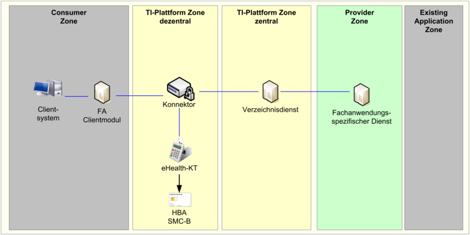
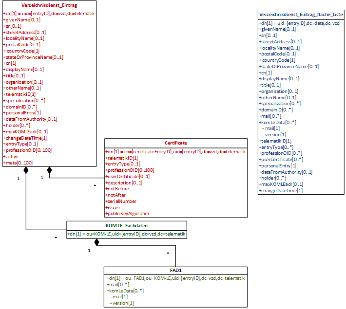

Elektronische Gesundheitskarte und Telematikinfrastruktur
Spezifikation
Verzeichnisdienst
| Version | 1.15.0 |
| Revision | 574250 |
| Stand | 17.02.2023 |
| Status | freigegeben |
| Klassifizierung | öffentlich |
| Referenzierung | gemSpec_VZD |
Änderungen zur Vorversion
Anpassungen des vorliegenden Dokumentes im Vergleich zur Vorversion können Sie der nachfolgenden Tabelle entnehmen.
Dokumentenhistorie
| Version |
Stand |
Kap./ Seite |
Grund der Änderung, besondere Hinweise |
Bearbeitung |
|---|---|---|---|---|
| 1.2.0 | 17.07.15 | Nutzer der Schnittstelle I_Directory_Maintenance geändert | gematik | |
| 1.3.0 | 24.08.16 | Anpassungen zum Online-Produktivbetrieb (Stufe 1) | gematik | |
| 1.4.0 | 28.10.16 | Einarbeitung lt. Änderungsliste | gematik | |
| 1.5.0 | 19.04.17 | Anpassung nach Änderungsliste | gematik | |
| 1.6.0 | 14.05.18 | Anpassung nach Änderungslisten P15.2, 15.4 und 15.5 | gematik | |
| 1.7.0 | 15.05.19 | Einarbeitung der Änderungen gemäß P18.1 | gematik | |
| 1.8.0 | 28.06.19 | Einarbeitung der Änderungen gemäß P19.1 | gematik | |
| 1.9.0 | 02.10.19 | Einarbeitung der Änderungen gemäß P20.1 und P16.1/2 | gematik | |
| 1.10.0 | 30.06.20 | Anpassungen gemäß Änderungsliste P22.1 und Scope-Themen aus Systemdesign R4.0.0 | gematik | |
| 1.11.0 | 12.11.20 | Anpassungen gemäß Änderungsliste P22.2 und Scope-Themen aus Systemdesign R4.0.1 | gematik | |
| 1.11.1 | 18.12.20 | Einarbeitung der Änderungen gemäß P22.4 | gematik | |
| 1.12.0 | 19.02.21 | Anpassungen gemäß Änderungsliste P22.5; Korrekturen in der Beschreibung des Datenmodells sowie neue Operation zur Abfrage aller Daten über die REST-Schnittstelle. |
gematik | |
| 1.13.0 | 06.04.21 | Anpassungen gemäß Änderungsliste KIM_Maintenance_21.1/ KIM 1.5.1 |
gematik | |
| 1.13.1 | 20.04.21 | Anpassung C_10533 aus KIM_Maintenance_21.1 vervollständigt (TIP1-A_5586 entfernt) | gematik | |
| 1.13.2 | 11.10.21 | Umbenennung folgender Begriffe durch: aus "aAdG-NetG" wird "WANDA Basic", aus "aAdG" und "aAdG-NetG-TI" wird "WANDA Smart" |
gematik | |
| 1.14.0 | 31.01.22 | Anpassung gemäß Änderungsliste VZD-Maintenance 21.1 (C_10737) und VZD-Maintenance 21.2 (C_10918) | gematik | |
| 1.15.0 | 17.02.23 | Anpassungen des gemSpec_VZD für eGBR und SMC-B ORG (VZD-Maintenance_23.1) | gematik |
Die Spezifikation des Verzeichnisdienstes (VZD) enthält die Definition der Funktionalität, der Prozesse und der Schnittstellen sowie das Informationsmodell des VZD.
Der VZD ist ein zentraler Dienst der TI-Plattform.
Das Informationsmodell des VZD ist erweiterbar.
Die vorliegende Spezifikation definiert die Anforderungen zu Herstellung, Test, Betrieb, Datenschutz und Informationssicherheit des Produkttyps VZD.
Das Dokument ist maßgeblich für Anbieter und Hersteller von Verzeichnisdiensten
Dieses Dokument enthält normative Festlegungen zur Telematikinfrastruktur des Deutschen Gesundheitswesens. Der Gültigkeitszeitraum der vorliegenden Version und deren Anwendung in Zulassungs- oder Abnahmeverfahren wird durch die gematik mbH in gesonderten Dokumenten (z.B. Dokumentenlandkarte, Produkttypsteckbrief, Leistungsbeschreibung) festgelegt und bekannt gegeben.
Schutzrechts-/Patentrechtshinweis
Die nachfolgende Spezifikation ist von der gematik allein unter technischen Gesichtspunkten erstellt worden. Im Einzelfall kann nicht ausgeschlossen werden, dass die Implementierung der Spezifikation in technische Schutzrechte Dritter eingreift. Es ist allein Sache des Anbieters oder Herstellers, durch geeignete Maßnahmen dafür Sorge zu tragen, dass von ihm aufgrund der Spezifikation angebotene Produkte und/oder Leistungen nicht gegen Schutzrechte Dritter verstoßen und sich ggf. die erforderlichen Erlaubnisse/Lizenzen von den betroffenen Schutzrechtsinhabern einzuholen. Die gematik mbH übernimmt insofern keinerlei Gewährleistungen.
Spezifiziert werden in dem Dokument die von dem Produkttyp bereitgestellten (angebotenen) Schnittstellen. Benutzte Schnittstellen werden hingegen in der Spezifikation desjenigen Produkttypen beschrieben, der diese Schnittstelle bereitstellt. Auf die entsprechenden Dokumente wird verwiesen (siehe auch ).
Die vollständige Anforderungslage für den Produkttyp ergibt sich aus weiteren Konzept- und Spezifikationsdokumenten, diese sind in dem Produkttypsteckbrief des Produkttyps VZD dokumentiert.
Nicht Bestandteil des vorliegenden Dokumentes sind die Festlegungen zum Themenbereich
Anforderungen als Ausdruck normativer Festlegungen werden durch eine eindeutige ID in eckigen Klammern sowie die dem RFC 2119 [RFC2119] entsprechenden, in Großbuchstaben geschriebenen deutschen Schlüsselworte MUSS, DARF NICHT, SOLL, SOLL NICHT, KANN gekennzeichnet.
Sie werden im Dokument wie folgt dargestellt:
<AFO-ID> - <Titel der Afo>
Text / Beschreibung
[<=]
Dabei umfasst die Anforderung sämtliche innerhalb der Afo-ID und der Textmarke angeführten Inhalte.
Für die Erzeugung der Abbildungen und Informationsmodelle wird das Tool „Enterprise Architect“ verwendet.
Der VZD ist ein Produkttyp der TI gemäß [gemKPT_Arch_TIP].

Abbildung 1: Einordnung des VZD in die TI
Der VZD befindet sich in der zentralen Zone der TI-Plattform.
Die Dateneinträge werden erstellt und gepflegt:
Der VZD kann durch LDAP-Clients abgefragt werden.
TIP1-A_5546-01
Der Anbieter des VZD MUSS die Integrität und Authentizität der im VZD gespeicherten Daten gemäß den Richtlinien des Bundesamtes für Sicherheit in der Informationstechnik für allgemeine Verzeichnisdienste, [BSI APP.2.1], implementieren. <=
TIP1-A_5547-01
Der VZD MUSS täglich die gespeicherten Zertifikate nach Ablaufdatum (TUC_PKI_002 „Gültigkeitsprüfung des Zertifikats“) und Status (TUC_PKI_006 "OCSP-Abfrage) prüfen. Ungültige Zertifikate werden (inklusive der gesamten Zertifikatsstruktur "Certificate" entsprechend Abb_VZD_logisches_Datenmodell) sofort gelöscht. Ein Eintrag ohne gültige Zertifikate wird nach einem Jahr gelöscht und darf nicht durch eine Anfrage über die Operation search_Directory der Schnittstelle I_Directory_Query gefunden werden.
<=
Zum Beispiel dürfen gültige RU-/TU-Zertifikate nicht in der PU akzeptiert werden. Die Prüfung über TUC_PKI_018 berücksichtigt entsprechend dem initialisierten Vertrauensanker (aus der jeweiligen Umgebung) die Umgebung.
A_21808
Der VZD MUSS beim Hinzufügen von Zertifikaten prüfen, ob der Wert der enthaltenen professionOID bzw. entryType schon in den Basisdaten vorhanden ist. Falls nicht, MUSS der VZD diese professionOID bzw. entryType zu den existierenden Basisdaten hinzufügen. <=
A_21809
Der VZD MUSS gewährleisten, dass nach dem Löschen von Zertifikaten für die Attribute professionOID und entryType in den Basisdaten nur Werte aus den verbleibenden Zertifikaten erhalten bleiben. <=
TIP1-A_5548
Der VZD MUSS Änderungen der Verzeichnisdiensteinträge protokollieren und muss sie 6 Monate zur Verfügung halten.
<=6 Monate ist die maximale Nachweistiefe ohne in den Bereich der Vorratsdatenspeicherung zu kommen.
TIP1-A_5549
Der VZD DARF Suchanfragen NICHT speichern oder protokollieren.
<=TIP1-A_5550
Der VZD DARF von gelöschten Daten KEINE Kopien speichern.
<=TIP1-A_5551
Der Anbieter des VZD MUSS den Dienst gegen Datenverlust absichern.
<=TIP1-A_5552
Der VZD MUSS die Ergebnisliste einer Suchanfrage auf 100 Suchergebnisse begrenzen.
<=TIP1-A_5553
Der VZD MUSS seine privaten Schlüssel sicher speichern und ihr Auslesen verhindern um Manipulationen zu verhindern.
<=TIP1-A_5554
Der VZD MUSS die Integrität und Authentizität der gespeicherten Registrierungsdaten der FAD gewährleisten.
<=TIP1-A_5555
Der VZD MUSS für seine SOAP-Schnittstelle die generischen Fehlercodes
Code 2: Verbindung zurückgewiesen
Code 3: Nachrichtenschema fehlerhaft
Code 4: Version Nachrichtenschema fehlerhaft
Code 6: Protokollfehler
aus Tabelle Tab_Gen_Fehler aus [gemSpec_OM] im SOAP-Fault verwenden. Erkannte Fehler auf Transportprotokollebene müssen auf gematik SOAP Faults (Code 6 aus Tabelle Tab_Gen_Fehler aus [gemSpec_OM]) abgebildet werden.
TIP1-A_5556
Der VZD MUSS lokal und remote erkannte Fehler in seinem lokalen Speicher protokollieren.
<=TIP1-A_5557
Der VZD MUSS IPv4 und IPv6 für alle seine IP-Schnittstellen im Dual-Stack-Mode unterstützen.
<=TIP1-A_5558
Der VZD MUSS die Inhalte der TSL in einem lokalen Trust Store sicher speichern und für X.509-Zertifikatsprüfungen lokal zugreifbar halten.
<=TIP1-A_5560
Der Anbieter des VZD MUSS die Erweiterbarkeit des VZD für die Aufnahme der Fachdaten neuer Fachanwendungen gewährleisten.
<=TIP1-A_5561
Der Anbieter des VZD MUSS alle erforderlichen Einträge zur Dienstlokalisierung der Außenschnittstellen gemäß [RFC6763] beginnend mit folgenden PTR Resource Record-Bezeichnern im Namensdienst der TI-Plattform anlegen:
TIP1-A_5562
Der Betreiber des VZD MUSS sicherstellen, dass Benutzer gleichzeitig auf den VZD zugreifen können. Dies umfasst alle technischen Schnittstellen. In [gemSpec_Perf] ist die Anzahl der parallelen Zugriffe definiert.
<=TIP1-A_5563-01
Der Anbieter des VZD MUSS sicherstellen, dass 1.000.000 Einträge gespeichert werden können.
<=
TIP1-A_5620
Der Anbieter des VZD MUSS Leading und Trailing Spaces abschneiden.
<=
A_20331
Der VZD MUSS an allen Schnittstellen - welche LDAP nutzen bzw. auf LDAP abgebildet werden - LDAP Injection Attacks durch geeignete Sicherheitsprüfungen verhindern.
<=
A_20262
Der VZD MUSS bei dem Hinzufügen von KOM-LE Adressen in den Fachdaten folgende Regeln beachten:
A_20263
Der VZD DARF KOM-LE Adressen in den Fachdaten als Folge einer Änderung (Verkleinerung) des Attributwerts von maxKOMLEadr NICHT automatisch löschen.
<=
Der betroffene KOM-LE Teilnehmer muss in diesem Fall zusammen mit dem KOM-LE-Anbieter die nicht mehr benötigten KOM-LE Adressen löschen.
A_23179
Der VZD MUSS - anhand der Attribute notBefore und notAfter in den Zertifikatsdaten - periodisch die zeitliche Gültigkeit der Zertifikate ermitteln und diese entsprechend ihrer Gültigkeit in die flache Liste synchronisieren bzw. aus ihr löschen. Die Periode dieser Prüfung MUSS konfigurierbar sein. <=
A_22224
Der VZD MUSS das Mapping von professionOID auf entryType konfigurierbar implementieren, so dass bei Änderung des Mappings oder neuen professionOIDs oder neuen entryTypes keine Anpassung an der Software des VZD erforderlich ist.
Änderungen am Mapping werden durch den Gesamtbetriebsverantwortlichen TI per betrieblichen Change veranlasst.
<=
Der VZD beinhaltet alle serverseitigen Anteile des Basisdienstes Verzeichnis_Identitäten gemäß [gemKPT_Arch_TIP]. Dazu zählen die Speicherung der Einträge von Leistungserbringern und Institutionen mit allen definierten Attributen sowie die Speicherung von Fachdaten durch FAD. Mit einer LDAP-Suchanfrage können Clients und FAD Basis- und Fachdaten abfragen (z. B. X.509-Zertifikate).
Einträge des VZD werden durch berechtigte Benutzer sowie durch berechtigte FAD erstellt und gepflegt.
TIP1-A_5564
Der VZD MUSS die Schnittstellen gemäß Tabelle Tab_PT_VZD_Schnittstellen implementieren („bereitgestellte“ Schnittstellen) und nutzen („benötigte“ Schnittstellen).
Tabelle 1: Tab_PT_VZD_Schnittstellen
| Schnittstelle |
bereitgestellt / benötigt |
Bemerkung |
|---|---|---|
| I_Directory_Query |
bereitgestellt |
|
| I_Directory_Maintenance |
bereitgestellt |
|
| I_Directory_Application_Maintenance |
bereitgestellt |
|
| I_Directory_Administration | bereitgestellt | |
| I_IP_Transport |
benötigt |
Definition in [gemSpec_Net] |
| I_DNS_Name_Resolution |
benötigt |
Definition in [gemSpec_Net] |
| I_NTP_Time_Information |
benötigt |
Definition in [gemSpec_Net] |
| I_OCSP_Status_Information |
benötigt |
Definition in [gemSpec_PKI] |
| I_TSL_Download |
benötigt |
Definition in [gemSpec_TSL] |
A_22361
Der VZD MUSS für die Leseoperationen read_Directory_Entry und read_Directory_Entry_for_Sync der Schnittstellen I_Directory_Administration und I_Directory_Application_Maintenance die folgenden Filtermöglichkeiten unterstützen:
Beispiel für die Belegung der Filterparameter einer Operation read_Directory_Entry für die Suche nach Einträgen ohne gefülltes Attribut "specialization" UND Postleitzahl 10*:
postalCode 10*
specialization \00
Die Schnittstelle ermöglicht LDAPv3-Clients die Suche nach Daten im VZD gemäß der im Informationsmodell (siehe Kapitel 5) definierten Attribute.
TIP1-A_5565
Der VZD MUSS für LDAP Clients die Schnittstelle I_Directory_Query gemäß Tabelle Tab_VZD_Schnittstelle_I_Directory_Query anbieten.
Tabelle 2: Tab_VZD_Schnittstelle_I_Directory_Query
| Name |
I_Directory_Query |
|
|---|---|---|
| Version |
wird im Produkttypsteckbrief des VZD definiert |
|
| Operationen |
Name |
Kurzbeschreibung |
| search_Directory |
Abfragen von Daten des VZD gemäß LDAPv3 Protokoll. Der Base DN für die LDAP Suche ist dc=data,dc=vzd. |
|
TIP1-A_5566
Der LDAP Client MUSS die Verbindung zum VZD mittels LDAPS sichern.
Der LDAP Client muss das Zertifikat des VZD C.ZD.TLS-S gemäß TUC_PKI_018 "Zertifikatsprüfung in der TI" und die Rolle (zulässig ist oid_vzd_ti) prüfen. LDAP Clients der Anbieter von WANDA Basic und WANDA Smart sind davon ausgenommen.
Der LDAP Client authentisiert sich nicht.
<=
TIP1-A_5567
Der VZD MUSS sicherstellen, dass die Operation search_Directory nur über eine bestehende LDAPS -Verbindung ausgeführt werden kann.
Der VZD muss die TLS-Verbindung 15 Minuten nach dem letzten Meldungsverkehr abbauen, falls sie noch besteht.
<=TIP1-A_5568
Der VZD und die LDAP-Clients MÜSSEN die search Operation gemäß den LDAPv3 Standards [RFC4510], [RFC4511], [RFC4512], [RFC4513], [RFC4514], [RFC4515], [RFC4516], [RFC4517], [RFC4518], [RFC4519], [RFC4520], [RFC4522] und [RFC4523] implementieren.
<=
A_17794
Der VZD MUSS für die Schnittstelle I_Directory_Query einen technischen User in RU/TU bereitstellen, über den eine unlimitierte Abfrage der Daten des Verzeichnisdienstes (searchView) möglich ist.
<=
TIP1-A_5569
Der VZD MUSS die enthaltenen Daten so strukturiert haben, dass mit einer einzigen LDAPv3-Suche alle einer Telematik-ID zugeordneten Attribute (Basisdaten und Fachdaten) in Form einer flachen Liste von Attributen ohne ou-Unterstruktur abgefragt werden können.
Die abgefragten Attribute MÜSSEN durch marktübliche E-Mail Clients nutzbar sein.
<=
TIP1-A_5570
Der Anbieter des VZD MUSS für die Nutzung durch LDAP Clients den technischen Use Case TUC_VZD_0001 „search_Directory” gemäß Tabelle Tab_TUC_VZD_0001 unterstützen.
Tabelle 3: Tab_TUC_VZD_0001
| Name |
TUC_VZD_0001 “search_Directory” |
|
|---|---|---|
| Beschreibung |
Diese Operation ermöglicht die Suche nach den im VZD gespeicherten Daten. |
|
| Vorbedingungen |
Der LDAPS-Verbindungsaufbau muss erfolgreich durchgeführt sein. |
|
| Eingangsdaten |
Search Request gemäß [RFC4511]#4.5.1 und Informationsmodell (Abb_VZD_logisches_Datenmodell) |
|
| Komponenten |
LDAP Client, Verzeichnisdienst |
|
| Ausgangsdaten |
gemäß [RFC4511]#4.5.2 |
|
| Standardablauf |
Aktion |
Beschreibung |
| Search Request senden |
Der LDAP Client sendet eine Suchanfrage gemäß [RFC4511]#4.5.1 an die Schnittstelle I_Directory_Query des VZD. Die RFCs [RFC4510], [RFC4511], [RFC4513], [RFC4514], [RFC4515], [RFC4516], [RFC4519] und [RFC4522] müssen unterstützt werden. Der Base DN für die LDAP Suche ist dc=data,dc=vzd. |
|
| Search Response empfangen |
Der LDAP Client empfängt das Ergebnis der Suche gemäß [RFC4511]#4.5.2. |
|
| Varianten/Alternativen |
keine |
|
| Zustand nach erfolgreichem Ablauf |
Die Ergebnisse der Suche liegen im LDAP Client vor. |
|
| Fehlerfälle |
Zur Behandlung auftretender Fehlerfälle werden Fehlermeldungen gemäß [RFC4511]#Appendix A verwendet. |
|
Die Schnittstelle ermöglicht die Administration der Basisdaten.
TIP1-A_5571
Der VZD MUSS die Schnittstelle I_Directory_Maintenance gemäß Tabelle Tab_VZD_Schnittstelle_I_Directory_Maintenance anbieten.
Tabelle 4: Tab_VZD_Schnittstelle_I_Directory_Maintenance
| Name |
I_Directory_Maintenance |
|
|---|---|---|
| Version |
wird im Produkttypsteckbrief des VZD definiert |
|
| Operationen |
Name |
Kurzbeschreibung |
| add_Directory_Entry |
Erzeugung eines Basisdaten-Verzeichniseintrages oder Überschreiben eines bestehenden Verzeichniseintrages. |
|
| read_Directory_Entry |
Abfrage aller Basis- und Fachdaten eines Verzeichniseintrages. |
|
| modify_Directory_Entry |
Änderung eines Basisdaten-Verzeichniseintrages. |
|
| delete_Directory_Entry |
Löschung eines Verzeichniseintrages (Basisdaten und Fachdaten). |
|
TIP1-A_5572
Der VZD MUSS die Schnittstelle I_Directory_Maintenance durch Verwendung von TLS mit beidseitiger Authentisierung sichern.
Der VZD muss sich mit der Identität ID.ZD.TLS-S authentisieren.
Der VZD muss das vom FAD übergebene AUT-Zertifikat C.FD.TLS-C hinsichtlich OCSP-Gültigkeit und Übereinstimmung mit einem Zertifikat eines zur Nutzung dieser Schnittstelle registrierten Fachdienstes prüfen. Bei negativem Ergebnis wird der Verbindungsaufbau abgebrochen.
<=
TIP1-A_5574
Der VZD und Nutzer der Schnittstelle MÜSSEN die Schnittstelle I_Directory_Maintenance als SOAP-Webservice über HTTPS implementieren. Der Webservice wird durch die Dokumente DirectoryMaintenance.wsdl und DirectoryMaintenance.xsd definiert.
<=Diese Operation legt einen neuen Basisdatensatz an oder überschreibt einen bestehenden Datensatz im LDAP Verzeichnis.
TIP1-A_5575
Der VZD MUSS nach folgenden Vorgaben die Operation add_Directory_Entry implementieren:
In der folgenden Tabelle sind die Regeln zur Transformation von I_Directory_Maintenance Request Elementen zu LDAP-Directory Attributen und die Regeln zur Transformation aus LDAP-Directory Attributen zu I_Directory_Maintenance Response Elementen beschrieben.
Tabelle 5: Tab_VZD_Daten-Transformation
| I_Directory_Maintenance Request Element | LDAP-Directory Attribut | I_Directory_Maintenance Response Element | Zusatzinformation |
|---|---|---|---|
| n/a | givenname | givenname | Verwendung gemäß Tab_VZD_Datenbeschreibung |
| n/a | sn SMC-B: Wird vom VZD als Kopie von otherName eingetragen. |
surname | Verwendung gemäß Tab_VZD_Datenbeschreibung |
| n/a | cn Wird vom VZD als Kopie von otherName eingetragen. |
commonName | Verwendung gemäß Tab_VZD_Datenbeschreibung |
| n/a | displayName Wird vom VZD als Kopie von otherName eingetragen. |
displayName | |
| streetAddress | streetAddress | streetAddress | Alias street Der Alias-Wert wird in der LDAP Response verwendet. |
| postalCode | postalCode | postalCode | |
| localityName | localityName | localityName | Alias l Der Alias-Wert wird in der LDAP Response verwendet. |
| stateOrProvinceName | stateOrProvinceName | stateOrProvinceName | Alias st Der Alias-Wert wird in der LDAP Response verwendet. |
| title | title | title | Verwendung gemäß Tab_VZD_Datenbeschreibung |
| organization | organization | organization | Alias o Der Alias-Wert wird in der LDAP Response verwendet. Verwendung gemäß Tab_VZD_Datenbeschreibung |
| otherName | otherName SMC-B: wird vom VZD zusätzlich in displayName, surname und cn eingetragen |
otherName | Verwendung gemäß Tab_VZD_Datenbeschreibung |
| subject | specialization | subject | Verwendung gemäß Tab_VZD_Datenbeschreibung |
| n/a | domainID | n/a | |
| n/a | personalEntry | n/a | Verwendung gemäß Tab_VZD_Datenbeschreibung |
| x509CertificateEnc | userCertificate | x509CertificateEnc | Verwendung gemäß Tab_VZD_Datenbeschreibung |
| n/a | entryType | n/a | Verwendung gemäß Tab_VZD_Datenbeschreibung |
| n/a | telematikID | telematikID | Verwendung gemäß Tab_VZD_Datenbeschreibung |
| n/a | professionOID | n/a | Verwendung gemäß Tab_VZD_Datenbeschreibung |
| n/a | usage | n/a | Verwendung gemäß Tab_VZD_Datenbeschreibung |
| n/a | description | n/a | |
| timestamp | n/a | timestamp | Datum und Zeit des Requests bzw. der Response |
| variant | n/a HBA: Wenn variant == full, dann werden givenName und sn aus dem Zertifikat in die gleichnamigen LDAP Attribute übernommen. |
n/a | |
| givenname | n/a | n/a | |
| surname | n/a | n/a | |
| commonName | n/a | n/a | |
| serviceData | n/a | n/a | |
| n/a | n/a | status |
TIP1-A_5576
Der Nutzer der Schnittstelle MUSS den technischen Use Case TUC_VZD_0002 „add_Directory_Entry” gemäß Tabelle Tab_TUC_VZD_0002 umsetzen.
Der SOAP-Requests MUSS gemäß Tab_VZD_Datenbeschreibung mit der Bedeutung entsprechenden Daten ausgefüllt sein.
Tabelle 6: Tab_TUC_VZD_0002
| Name |
TUC_VZD_0002 „add_Directory_Entry” |
|
|---|---|---|
| Beschreibung |
Diese Operation ermöglicht die Erzeugung von neuen Basisdaten. Bestehende Basisdaten werden überschrieben. |
|
| Vorbedingungen |
keine |
|
| Eingangsdaten |
SOAP-Request „addDirectoryEntry“ |
|
| Komponenten |
Nutzer der Schnittstelle, Verzeichnisdienst |
|
| Ausgangsdaten |
SOAP-Response „VZD:responseMsg“ |
|
| Standardablauf |
Aktion |
Beschreibung |
| Aufbau TLS-Verbindung |
Wenn noch keine Verbindung besteht initiiert der Nutzer der Schnittstelle den Verbindungsaufbau. Der Nutzer der Schnittstelle authentisiert sich mit dem AUT-Zertifikat C.FD.TLS-C. |
|
| SOAP-Request senden |
Der Nutzer der Schnittstelle ruft die SOAP-Operation VZD:addDirectoryEntry auf. |
|
| SOAP-Response empfangen |
Die SOAP-Response VZD:responseMsg mit dem VZD:status wird empfangen. |
|
| Varianten/Alternativen |
keine |
|
| Fehlerfälle |
Es werden die protokollspezifischen Fehlermeldungen verwendet (TCP, HTTP, TLS). Fehler bei der Verarbeitung des SOAP Requests werden als gematik SOAP-Fault versendet: faultcode 4211, faultstring: Operation fehlerhaft ausgeführt, Basisdaten konnten nicht angelegt werden (Fehler im Verzeichnisdienst) faultcode 4202, faultstring: SOAP Request enthält Fehler faultcode 4201, faultstring: Operation enthält ungültige Daten Erkannte Fehler auf Transportprotokollebene müssen auf gematik SOAP Faults (Code 6 aus Tabelle Tab_Gen_Fehler aus [gemSpec_OM]) abgebildet werden. Zusätzlich müssen die generischen gematik SOAP-Faults Code 2: Verbindung zurückgewiesen Code 3: Nachrichtenschema fehlerhaft Code 4: Version Nachrichtenschema fehlerhaft unterstützt werden. |
|
Diese Operation liest einen vollständigen Eintrag aus dem LDAP Verzeichnis aus.
TIP1-A_5577
Der VZD MUSS nach folgenden Vorgaben die Operation I_Directory_Maintenance::read_Directory_Entry implementieren:
TIP1-A_5578
Der Nutzer der Schnittstelle MUSS den technischen Use Case TUC_VZD_0003 „read_Directory_Entry” gemäß Tabelle Tab_TUC_VZD_0003 umsetzen. Der Webservice wird durch die Dokumente DirectoryMaintenance.wsdl und DirectoryMaintenance.xsd definiert.
Die SOAP-Response ist gemäß Tabelle Tab_VZD_Datenbeschreibung mit den zur Telematik-ID gehörenden Daten aus dem VZD ausgefüllt.
Tabelle 7: Tab_TUC_VZD_0003
| Name |
TUC_VZD_0003 „read_Directory_Entry” |
|
|---|---|---|
| Beschreibung |
Diese Operation liest einen vollständigen Eintrag aus dem VZD aus. |
|
| Vorbedingungen |
Keine |
|
| Eingangsdaten |
SOAP-Request „readDirectoryEntry“ |
|
| Komponenten |
Nutzer der Schnittstelle, Verzeichnisdienst |
|
| Ausgangsdaten |
SOAP-Response „readResponseMsg“ |
|
| Standardablauf |
Aktion |
Beschreibung |
| Aufbau TLS-Verbindung |
Wenn noch keine Verbindung besteht initiiert der Nutzer der Schnittstelle den Verbindungsaufbau. Der Nutzer der Schnittstelle authentisiert sich mit dem AUT-Zertifikat C.FD.TLS-C. |
|
| SOAP-Request senden |
Der Nutzer der Schnittstelle ruft die SOAP-Operation VZD:readDirectoryEntry auf. |
|
| SOAP-Response empfangen |
Die SOAP-Response VZD:readResponseMsg mit allen Basisdaten wird empfangen. |
|
| Varianten/Alternativen |
keine |
|
| Fehlerfälle |
Es werden die protokollspezifischen Fehlermeldungen verwendet (TCP, HTTP, TLS) Fehler bei der Verarbeitung des SOAP Requests werden als gematik SOAP-Fault versendet: faultcode 4221, faultstring: Operation fehlerhaft ausgeführt, Basisdaten konnten nicht gelesen werden (Fehler im Verzeichnisdienst) faultcode 4312, faultstring: Basisdaten konnten nicht gefunden werden faultcode 4202, faultstring: SOAP Request enthält Fehler Erkannte Fehler auf Transportprotokollebene müssen auf gematik SOAP Faults (Code 6 aus Tabelle Tab_Gen_Fehler aus [gemSpec_OM]) abgebildet werden. Zusätzlich müssen die generischen gematik SOAP-Faults Code 2: Verbindung zurückgewiesen Code 3: Nachrichtenschema fehlerhaft Code 4: Version Nachrichtenschema fehlerhaft unterstützt werden. |
|
Diese Operation ändert die Daten eines bestehenden Basisdatensatzes im LDAP Verzeichnis.
TIP1-A_5579
Der VZD MUSS nach folgenden Vorgaben die Operation modify_Directory_Entry implementieren:
TIP1-A_5580
Der Nutzer der Schnittstelle MUSS den technischen Use Case TUC_VZD_0004 „modify_Directory_Entry” gemäß Tabelle Tab_TUC_VZD_0004 umsetzen. Der Webservice wird durch die Dokumente DirectoryMaintenance.wsdl und DirectoryMaintenance.xsd definiert.
Der SOAP-Requests MUSS gemäß Tabelle VZD_TAB_modifyDirectoryEntry_Mapping mit der Bedeutung entsprechenden Daten ausgefüllt sein.
Tabelle 8: Tab_TUC_VZD_0004
| Name |
TUC_VZD_0004 „modify_Directory_Entry” |
|
|---|---|---|
| Beschreibung |
Diese Operation ermöglicht die Änderung von Basisdaten. |
|
| Vorbedingungen |
keine |
|
| Eingangsdaten |
SOAP-Request „modifyDirectoryEntry“ |
|
| Komponenten |
Nutzer der Schnittstelle, Verzeichnisdienst |
|
| Ausgangsdaten |
SOAP-Response „responseMsg“ |
|
| Standardablauf |
Aktion |
Beschreibung |
| Aufbau TLS-Verbindung |
Wenn noch keine Verbindung besteht initiiert der Nutzer der Schnittstelle den Verbindungsaufbau. Der Nutzer der Schnittstelle authentisiert sich mit dem AUT-Zertifikat C.FD.TLS-C. |
|
| SOAP-Request senden |
Der Nutzer der Schnittstelle ruft die SOAP-Operation VZD:modifyDirectoryEntry auf. |
|
| SOAP-Response empfangen |
Die SOAP-Response VZD:responseMsg mit dem VZD:status wird empfangen. |
|
| Varianten/Alternativen |
keine |
|
| Fehlerfälle |
Es werden die protokollspezifischen Fehlermeldungen verwendet (TCP, HTTP, TLS) Fehler bei der Verarbeitung des SOAP Requests werden als gematik SOAP-Fault versendet: faultcode 4231, faultstring: Operation fehlerhaft ausgeführt, Basisdaten konnten nicht modifiziert werden (Fehler im Verzeichnisdienst) faultcode 4312, faultstring: Basisdaten konnten nicht gefunden werden faultcode 4202, faultstring: SOAP Request enthält Fehler Erkannte Fehler auf Transportprotokollebene müssen auf gematik SOAP Faults (Code 6 aus Tabelle Tab_Gen_Fehler aus [gemSpec_OM]) abgebildet werden. Zusätzlich müssen die generischen gematik SOAP-Faults Code 2: Verbindung zurückgewiesen Code 3: Nachrichtenschema fehlerhaft Code 4: Version Nachrichtenschema fehlerhaft unterstützt werden. |
|
Diese Operation löscht einen bestehenden Datensatz im LDAP Verzeichnis.
TIP1-A_5581
Der VZD MUSS nach folgenden Vorgaben die Operation I_Directory_Maintenance::delete_Directory_Entry implementieren:
Ein zur Telematik-ID gehörender vollständiger Eintrag gelöscht.
Es müssen die Fehlermeldungen gemäß Tab_TUC_VZD_0005 verwendet werden.
<=TIP1-A_5582
Der Nutzer der Schnittstelle MUSS den technischen Use Case TUC_VZD_0005 „delete_Directory_Entry” gemäß Tabelle Tab_TUC_VZD_0005 umsetzen. Der Webservice wird durch die Dokumente DirectoryMaintenance.wsdl und DirectoryMaintenance.xsd definiert.
Tabelle 9: Tab_TUC_VZD_0005
| Name |
TUC_VZD_0005 „delete_Directory_Entry” |
|
|---|---|---|
| Beschreibung |
Diese Operation ermöglicht die Löschung von Basisdaten inkl. der zugehörigen Fachdaten. |
|
| Vorbedingungen |
keine |
|
| Eingangsdaten |
SOAP-Request „deleteDirectoryEntry“ |
|
| Komponenten |
Nutzer der Schnittstelle, Verzeichnisdienst |
|
| Ausgangsdaten |
SOAP-Response „responseMsg“ |
|
| Standardablauf |
Aktion |
Beschreibung |
| Aufbau TLS-Verbindung |
Wenn noch keine Verbindung besteht initiiert der Nutzer der Schnittstelle den Verbindungsaufbau. Der Nutzer der Schnittstelle authentisiert sich mit dem AUT-Zertifikat C.FD.TLS-C. |
|
| SOAP-Request senden |
Der Nutzer der Schnittstelle ruft die SOAP-Operation VZD:deleteDirectoryEntry auf. |
|
| SOAP-Response empfangen |
Die SOAP-Response VZD:responseMsg mit dem VZD:status wird empfangen. |
|
| Varianten/Alternativen |
keine |
|
| Fehlerfälle |
Es werden die protokollspezifischen Fehlermeldungen verwendet (TCP, HTTP, TLS) Fehler bei der Verarbeitung des SOAP Requests werden als gematik SOAP-Fault versendet: faultcode 4241, faultstring: Operation fehlerhaft ausgeführt, Basisdaten konnten nicht gelöscht werden (Fehler im Verzeichnisdienst) faultcode 4312, faultstring: Basisdaten konnten nicht gefunden werden faultcode 4202, faultstring: SOAP Request enthält Fehler Erkannte Fehler auf Transportprotokollebene müssen auf gematik SOAP Faults (Code 6 aus Tabelle Tab_Gen_Fehler aus [gemSpec_OM]) abgebildet werden. Zusätzlich müssen die generischen gematik SOAP-Faults Code 2: Verbindung zurückgewiesen Code 3: Nachrichtenschema fehlerhaft Code 4: Version Nachrichtenschema fehlerhaft unterstützt werden. |
|
Die Schnittstelle ermöglicht die Administration der Fachdaten.
Der VZD stellt diese Schnittstelle als LDAPv3 und Webservice (SOAP und REST) bereit. Deshalb sind die Unterkapitel „Nutzung“ und „Umsetzung“ jeweils für LDAPv3 und Webservice (SOAP und REST) vorhanden.
TIP1-A_5583-02
Der VZD MUSS die Schnittstelle I_Directory_Application_Maintenance gemäß Tabelle Tab_VZD_Schnittstelle_I_Directory_Application_Maintenance anbieten.
Tabelle 10: Tab_VZD_Schnittstelle_I_Directory_Application_Maintenance
| Name |
I_Directory_Application_Maintenance |
|
|---|---|---|
| Version |
wird im Produkttypsteckbrief des VZD definiert |
|
| Operationen |
Operation |
Kurzbeschreibung |
| getInfo | Lesen der Metadaten dieser Schnittstelle (nur für die REST-Ausprägung verfügbar) | |
| add_Directory_FA-Attributes |
Erzeugung eines Fachdaten-Eintrags |
|
| delete_Directory_FA-Attributes |
Löschen von einzelnen oder allen zu einem FAD gehörenden Fachdaten eines Eintrags. |
|
| modify_Directory_FA-Attributes |
Ändern fachspezifischer Attribute |
|
| get_Directory_FA_Attributes | Lesen fachspezifischer Attribute | |
TIP1-A_5584
Der Anbieter des VZD MUSS sicherstellen, dass Fachdaten eines Dienstes nur durch einen beim VZD für diesen Dienst registrierten Fachdienst erzeugt, gelöscht und geändert werden können.
<=Dazu wird bei der Registrierung eine FAD zugeordnet. Unter dieser FAD werden die Fachdaten für den jeweiligen Dienst im VZD abgelegt. Die Zuordnung der FAD zu dem Dienst wird bei Aufruf jeder Operation von Schnittstelle I_Directory_Application_Maintenance durch den VZD geprüft (z.B. anhand des TLS-Client-Zertifikats oder OAuth2 Tokens).
TIP1-A_5585
Der VZD MUSS die Schnittstelle I_Directory_Application_Maintenance durch Verwendung von TLS mit beidseitiger Authentisierung sichern.
Der VZD muss sich mit der Identität ID.ZD.TLS-S authentisieren.
Der VZD muss das vom FAD übergebene AUT-Zertifikat C.FD.TLS-C hinsichtlich OCSP Gültigkeit und Übereinstimmung mit einem Zertifikat eines zur Nutzung dieser Schnittstelle registrierten Fachdienstes prüfen. Bei negativem Ergebnis wird der Verbindungsaufbau abgebrochen.
<=TIP1-A_5586-01
Der VZD MUSS die Schnittstelle I_Directory_Application_Maintenance als Webservice (SOAP und REST über HTTPS) und als LDPv3 über LDAPS implementieren. Der Webservice (SOAP) wird durch die Dokumente DirectoryApplicationMaintenance.wsdl und DirectoryApplicationMaintenance.xsd definiert. Der Webservice (REST) wird durch die [Directory_Application_Maintenance.yaml] Datei definiert. Die LDAPv3-Attribute sind in dem Informationsmodell Abb_VZD_logisches_Datenmodell beschrieben.
<=
TIP1-A_5587
Der VZD MUSS die Schnittstelle I_Directory_Application_Maintenance gemäß den LDAPv3 Standards [RFC4510], [RFC4511], [RFC4512], [RFC4513], [RFC4514], [RFC4515], [RFC4516], [RFC4517], [RFC4518], [RFC4519], [RFC4520], [RFC4522] und [RFC4523] implementieren.
<=TIP1-A_5588
Ein FAD, der Fachdaten im VZD verwalten will, MUSS entweder die Webservice- oder die LDAPv3-Schnittstelle nutzen.
<=TIP1-A_5589
Der FAD, der die LDAPv3-Schnittstelle I_Directory_Application_Maintenance des VZD nutzt, MUSS diese Schnittstelle gemäß den LDAPv3 Standards [RFC4510], [RFC4511], [RFC4512], [RFC4513], [RFC4514], [RFC4515], [RFC4516], [RFC4517], [RFC4518], [RFC4519], [RFC4520], [RFC4522] und [RFC4523] implementieren. Die LDAPv3-Attribute sind in dem Informationsmodell Abb_VZD_logisches_Datenmodell beschrieben.
<=
Diese Operation liefert die Metadaten der Schnittstelle I_Directory_Application_Maintenance.
A_21788-01
Der VZD MUSS nach folgenden Vorgaben die Operation getInfo implementieren:
In dem Rückgabewerten müssen die aktuell gültigen Metainformationen für Schnittstelle I_Directory_Application_Maintenance zurückgegeben werden. Insbesondere muss
In dem Dokument unter dieser URL muss ein Link zum Download der aktuell genutzten YAML-Datei dieser Schnittstelle hinterlegt sein.
A_21787
Der VZD MUSS die Operation „getInfo” gemäß Tabelle Tab_VZD „I_Directory_Application_Maintenance-getInfo” umsetzen.
Tabelle 11: Tab_VZD „I_Directory_Application_Maintenance-getInfo”
| Name | getInfo | |
| Beschreibung | Liefert die Metadaten (unter anderem aus dem InfoObject) dieser OpenAPI-Spezifikation und ergänzt sie. | |
| Eingangsdaten | REST-Request GET / operationId: getInfo (siehe DirectoryApplicationMaintenance.yaml) |
|
| Parameter | Beschreibung | |
| keine | - | |
| Komponenten | Nutzer der Schnittstelle | |
| Ausgangsdaten | REST-Response mit Metadaten (InfoObject). | |
| Ablauf | Der VZD liefert die Metadaten der Schnittstelle in der Datenstruktur InfoObject zurück. |
|
| Fehlerfälle | Es werden die protokollspezifischen Fehlermeldungen verwendet (TCP, HTTP, TLS) und in DirectoryApplicationMaintenance.yaml mit spezifischen Fehlerbeschreibungen ergänzt. | |
Diese Operation legt einen neuen Fachdatensatz an oder überschreibt einen bestehenden fachdienstspezifischen Datensatz.
Voraussetzung: Die Fachdaten müssen einem Basisdateneintrag zuordenbar sein.
TIP1-A_5590
Der VZD MUSS nach folgenden Vorgaben die Operation add_Directory_FA-Attributes implementieren:
Tabelle 12: VZD_TAB_I_Directory_Application_Maintenance_Add_Mapping
| SOAP-Request Element |
LDAP-Directory Basisdatensatz Attribut |
|---|---|
| VZD:timestamp |
wird nicht in das LDAP-Directory eingetragen |
| VZD:Telematik-ID |
|
| <FA-Attributes> |
fachdienstspezifische Attribute. Die SOAP-Request-Elemente werden namensgleich als LDAP-Attribute übernommen. |
TIP1-A_5591
Der FAD MUSS den technischen Use Case TUC_VZD_0006 “add_Directory_FA-Attributes” gemäß Tabelle Tab_TUC_VZD_0006 umsetzen.
Tabelle 13: Tab_TUC_VZD_0006
| Name |
add_Directory_FA-Attributes |
|
|---|---|---|
| Beschreibung |
Mit dieser Operation werden Fachdaten zu einem bestehenden Basisdaten-Eintrag zugefügt. |
|
| Vorbedingungen |
Keine. |
|
| Eingangsdaten |
SOAP-Request „addDirectoryFAAttributes“ |
|
| Komponenten |
VZD, FAD |
|
| Ausgangsdaten |
SOAP-Response „responseMsg“ |
|
| Standardablauf |
Aktion |
Beschreibung |
| Aufbau TLS-Verbindung |
Falls noch keine TLS-Verbindung besteht, wird eine aufgebaut. Der FAD authentisiert sich mit ID.FD.TLS-C. |
|
| SOAP-Request senden |
Der FAD ruft die SOAP-Operation VZD:addDirectoryFAAttributes auf. |
|
| SOAP-Response empfangen |
Die SOAP-Response VZD:responseMsg enthält den vzd:status. Im Fehlerfall wird eine gematik SOAP-Fault Response empfangen |
|
| Fehlerfälle |
Es werden die protokollspezifischen Fehlermeldungen verwendet (TCP, HTTP, TLS). Fehler bei der Verarbeitung des SOAP Requests werden als gematik SOAP-Fault versendet: faultcode 4311, faultstring: Operation fehlerhaft ausgeführt, Fachdaten konnten nicht angelegt werden (Fehler im Verzeichnisdienst) faultcode 4312, faultstring: Basisdaten konnten nicht gefunden werden faultcode 4202, faultstring: SOAP Request enthält Fehler |
|
TIP1-A_5592-03
Der FAD MUSS für die FA KOM-LE die Fachdaten nach VZD_TAB_KOM-LE_Add_Attributes administrieren.
Tabelle 14: VZD_TAB_KOM-LE_Attributes
| SOAP-Request Element |
LDAP-Directory Basisdatensatz Attribut |
|---|---|
| VZD:timestamp |
wird nicht in das LDAP-Directory eingetragen |
| VZD:telematikID |
|
| VZD:KOM-LE-EMail-Address |
mail |
| VZD:version | KOM-LE-Version |
TIP1-A_5593
Der VZD MUSS nach folgenden Vorgaben die Operation add_Directory_FA-Attributes implementieren:
Wenn kein zur Telematik-ID gehörender Basisdatensatz gefunden wurde, wird der Request mit einer Fehlermeldung beendet.
Ein noch nicht existierender Fachdatensatz zur Telematik-ID wird im VZD neu angelegt.
Der FAD darf nur die zu seinem Dienst gehörenden Fachdaten schreiben.
Es müssen die Fehlermeldungen gemäß Tab_TUC_VZD_0007 verwendet werden.
<=TIP1-A_5594
Der FAD MUSS den technischen Use Case TUC_VZD_0007 „add_Directory_FA-Attributes(LDAPv3)” gemäß Tabelle Tab_TUC_VZD_0007 unterstützen.
Tabelle 15: Tab_TUC_VZD_0007
| Name |
add_Directory_FA-Attributes(LDAPv3) |
|
|---|---|---|
| Beschreibung |
Mit dieser Operation werden Fachdaten zu einem bestehenden Eintrag zugefügt. |
|
| Vorbedingungen |
Der LDAPS-Verbindungsaufbau muss erfolgreich durchgeführt sein. |
|
| Eingangsdaten |
Add-Request gemäß [RFC4511]#4.7 und Informationsmodell (Abb_VZD_logisches_Datenmodell) |
|
| Komponenten |
LDAP Client des FAD, Verzeichnisdienst |
|
| Ausgangsdaten |
gemäß [RFC4511]#4.7 |
|
| Standardablauf |
Aktion |
Beschreibung |
| Add Request senden |
Der LDAP Client des FAD sendet den Add-Request gemäß [RFC4511]#4.7 an den VZD. Die RFCs [RFC4510], [RFC4511], [RFC4513], [RFC4514], [RFC4515], [RFC4516], [RFC4519] und [RFC4522] müssen unterstützt werden. |
|
| Add Response empfangen |
Der LDAP Client empfängt das Ergebnis der Operation gemäß [RFC4511]#4.7. |
|
| Varianten/Alternativen |
keine |
|
| Zustand nach erfolgreichem Ablauf |
Das Ergebnis der Operation liegt im LDAP Client des FAD vor. |
|
| Fehlerfälle |
Zur Behandlung auftretender Fehlerfälle werden Fehlermeldungen gemäß [RFC4511]#Appendix A verwendet. |
|
A_21834
Der VZD MUSS bei Änderungen an KOM-LE-Fachdaten mit den Operationen “add_Directory_FA-Attributes (LDAPv3)” und "modify_Directory_FA-Attributes (LDAPv3)" den Inhalt von Parameter KOM-LE_Version des Operation Requests gegen die Liste der gültigen Werte prüfen. Im Falle von ungültigen Werten MUSS der VZD mit LDAP Result Code constraintViolation (19) antworten und darf die Operation nicht ausführen. Der VZD MUSS die Liste der gültigen Werte von Attribut KOM-LE_Version konfigurierbar realisieren und der gematik Änderungensmöglichkeiten über einen Service Request bieten. <=
A_21835
Der VZD MUSS sicherstellen, dass jede KOM-LE-Adresse mit den Operationen “add_Directory_FA-Attributes (LDAPv3)” und "modify_Directory_FA-Attributes (LDAPv3)" nur an maximal einen VZD-Eintrag angehängt wird. Hierzu MUSS er vor einer Eintragung einer KOM-LE Adresse prüfen, ob diese bereits im VZD hinterlegt ist. Ist sie bereits hinterlegt, MUSS der VZD mit LDAP Result Code attributeOrValueExists (20) antworten und darf die Operation nicht ausführen.
<=
A_21458
Der VZD MUSS nach folgenden Vorgaben die Operation add_Directory_FA-Attributes implementieren:
A_21459
Der FAD MUSS den technischen Use Case TUC_VZD_0012 “add_Directory_FA-Attributes” gemäß Tabelle Tab_TUC_VZD_0012 umsetzen.
Tabelle 31: Tab_TUC_VZD_0012
| Name |
add_Directory_FA-Attributes |
|
|---|---|---|
| Beschreibung |
Mit dieser Operation werden Fachdaten zu einem bestehenden Basisdaten-Eintrag zugefügt. |
|
| Vorbedingungen |
Keine. |
|
| Eingangsdaten |
REST-Request „add_Directory_FA-Attributes“ |
|
| Komponenten |
VZD, FAD |
|
| Ausgangsdaten |
REST-Response |
|
| Standardablauf |
Aktion |
Beschreibung |
| Aufbau TLS-Verbindung |
Falls noch keine TLS-Verbindung besteht, wird eine aufgebaut. Der FAD authentisiert sich mit ID.FD.TLS-C. |
|
| REST-Request senden |
Der FAD ruft die REST-Operation add_Directory_FA-Attributes auf. |
|
| REST-Response empfangen |
Die REST-Response enthält den HTTP-Statuscode. Im Fehlerfall wird ein HTTP-Statuscode empfangen. |
|
| Fehlerfälle |
Es werden die protokollspezifischen Fehlermeldungen verwendet (TCP, HTTP, TLS). Fehler bei der Verarbeitung des REST Requests werden als HTTP-Statuscode versendet. |
|
A_21825-02
Der VZD MUSS bei Änderungen an KOM-LE-Fachdaten mit den Operationen „add_Directory_FA-Attributes“ und "modify_Directory_FA-Attributes" den Inhalt von Parameter KOM-LE_Version des Operation Requests gegen die Liste der gültigen Werte prüfen. Im Falle von ungültigen Werten MUSS der VZD mit HTTP-Statuscode 400 (attributeName="KOM-LE_Version" , attributeError="erläuternder Fehlertext") antworten und darf die Operation nicht ausführen. Der VZD MUSS die Liste der gültigen Werte von Attribut KOM-LE_Version konfigurierbar realisieren und der gematik Änderungensmöglichkeiten über einen Service Request bieten.
<=
A_21826-01
Der VZD MUSS sicherstellen, dass jede KOM-LE Adresse mit den Operationen „add_Directory_FA-Attributes“ und "modify_Directory_FA-Attributes" nur an maximal einen VZD-Eintrag angehängt wird. Hierzu MUSS er vor einer Eintragung einer KOM-LE Adresse prüfen, ob diese bereits im VZD hinterlegt ist. Ist sie bereits hinterlegt, MUSS der VZD mit HTTP-Statuscode 400 (attributeName="mail" , attributeError="erläuternder Fehlertext") antworten und darf die Operation nicht ausführen.
<=
Diese Operation löscht einen Fachdatensatz.
TIP1-A_5595
Der VZD MUSS nach folgenden Vorgaben die Operation delete_Directory_ FA-Attributes implementieren:
TIP1-A_5596
Der FAD MUSS den technischen Use Case TUC_VZD_0008 “delete_Directory_FA-Attributes” gemäß Tabelle Tab_TUC_VZD_0008 umsetzen.
Tabelle 16: Tab_TUC_VZD_0008
| Name |
delete_Directory_FA-Attributes |
|
|---|---|---|
| Beschreibung |
Mit dieser Operation wird ein Fachdaten-Eintrag gelöscht. |
|
| Vorbedingungen |
Keine. |
|
| Eingangsdaten |
SOAP-Request „deleteDirectoryFAAttributes“ |
|
| Komponenten |
VZD, FAD |
|
| Ausgangsdaten |
SOAP-Response „responseMsg“ |
|
| Standardablauf |
Aktion |
Beschreibung |
| Aufbau TLS-Verbindung |
Falls noch keine TLS-Verbindung besteht, wird eine aufgebaut. Der FAD authentisiert sich mit ID.FD.TLS-C. |
|
| SOAP-Request senden |
Der FAD ruft die SOAP-Operation VZD:deleteDirectoryFAAttributes auf. |
|
| SOAP-Response empfangen |
Die SOAP-Response VZD:responseMsg enthält den vzd:status. Im Fehlerfall wird eine gematik SOAP-Fault Response empfangen |
|
| Fehlerfälle |
Es werden die protokollspezifischen Fehlermeldungen verwendet (TCP, HTTP, TLS). Fehler bei der Verarbeitung des SOAP Requests werden als gematik SOAP-Fault versendet: faultcode 4321, faultstring: Operation fehlerhaft ausgeführt, Fachdaten konnten nicht gelöscht werden (Fehler im Verzeichnisdienst) faultcode 4312, faultstring: Basisdaten konnten nicht gefunden werden faultcode 4202, faultstring: SOAP Request enthält Fehler |
|
TIP1-A_5597
Der VZD MUSS nach folgenden Vorgaben die Operation delete_Directory_FA-Attributes implementieren:
Wenn kein zur Telematik-ID gehörender Basisdatensatz gefunden wurde, wird der Request beendet.
Ein zur Telematik-ID gehörender Fachdatensatz wird gelöscht.
Ein nicht existierender Fachdatensatz zur Telematik-ID führt zu keiner Aktion.
Der FAD darf nur die zu seinem Dienst gehörenden Fachdaten löschen.
Es müssen die Fehlermeldungen gemäß Tab_TUC_VZD_0009 verwendet werden.
<=TIP1-A_5598
Der FAD MUSS den technischen Use Case TUC_VZD_0009 „delete_Directory_FA-Attributes(LDAPv3)” gemäß Tabelle Tab_TUC_VZD_0009 unterstützen.
Tabelle 17: Tab_TUC_VZD_0009
| Name |
delete_Directory_FA-Attributes(LDAPv3) |
|
|---|---|---|
| Beschreibung |
Mit dieser Operation werden alle Fachdaten zu einem bestehenden Eintrag gelöscht. |
|
| Vorbedingungen |
Der LDAPS-Verbindungsaufbau muss erfolgreich durchgeführt sein. |
|
| Eingangsdaten |
Delete-Request gemäß [RFC4511]#4.8 und Informationsmodell (Abb_VZD_logisches_Datenmodell) |
|
| Komponenten |
LDAP Client des FAD, Verzeichnisdienst |
|
| Ausgangsdaten |
gemäß [RFC4511]#4.8 |
|
| Standardablauf |
Aktion |
Beschreibung |
| Delete Request senden |
Der LDAP Client des FAD sendet den delete-Request gemäß [RFC4511]#4.8 an den VZD. Die RFCs [RFC4510], [RFC4511], [RFC4513], [RFC4514], [RFC4515], [RFC4516], [RFC4519] und [RFC4522] müssen unterstützt werden. |
|
| Delete Response empfangen |
Der LDAP Client empfängt das Ergebnis der Operation gemäß [RFC4511]#4.8. |
|
| Varianten/Alternativen |
keine |
|
| Zustand nach erfolgreichem Ablauf |
Das Ergebnis der Operation liegt im LDAP Client des FAD vor. |
|
| Fehlerfälle |
Zur Behandlung auftretender Fehlerfälle werden Fehlermeldungen gemäß [RFC4511]#Appendix A verwendet. |
|
A_21460
Der VZD MUSS nach folgenden Vorgaben die Operation delete_Directory_ FA-Attributes implementieren:
A_21461
Der FAD MUSS den technischen Use Case TUC_VZD_0013 “delete_Directory_FA-Attributes” gemäß Tabelle Tab_TUC_VZD_0013 umsetzen.
Tabelle 32: Tab_TUC_VZD_0013
| Name |
delete_Directory_FA-Attributes |
|
|---|---|---|
| Beschreibung |
Mit dieser Operation wird ein Fachdaten-Eintrag gelöscht. |
|
| Vorbedingungen |
Keine. |
|
| Eingangsdaten |
REST-Request „delete_Directory_FA-Attributes“ |
|
| Komponenten |
VZD, FAD |
|
| Ausgangsdaten |
REST-Response |
|
| Standardablauf |
Aktion |
Beschreibung |
| Aufbau TLS-Verbindung |
Falls noch keine TLS-Verbindung besteht, wird eine aufgebaut. Der FAD authentisiert sich mit ID.FD.TLS-C. |
|
| REST-Request senden |
Der FAD ruft die REST-Operation delete_Directory_FA-Attributes auf. |
|
| REST-Response empfangen |
Die REST-Response enthält den HTTP-Statuscode. Im Fehlerfall wird ein HTTP-Statuscode empfangen. |
|
| Fehlerfälle |
Es werden die protokollspezifischen Fehlermeldungen verwendet (TCP, HTTP, TLS). Fehler bei der Verarbeitung des REST Requests werden als HTTP-Statuscode versendet. |
|
Diese Operation überschreibt einen Fachdatensatz.
TIP1-A_5599
Der VZD MUSS nach folgenden Vorgaben die Operation modify_Directory_ FA-Attributes implementieren:
Tabelle 18: VZD_TAB_I_Directory_Application_Maintenance_Modify_Mapping
| SOAP-Request Element |
LDAP-Directory Basisdatensatz Attribut |
|---|---|
| VZD:timestamp |
wird nicht in das LDAP-Directory eingetragen |
| VZD:Telematik-ID |
|
| <FA-Attributes> |
fachdienstspezifische Attribute. Die SOAP-Request-Elemente werden namensgleich als LDAP-Attribute übernommen. |
TIP1-A_5600
Der FAD MUSS den technischen Use Case TUC_VZD_0010 “modify_Directory_FA-Attributes” gemäß Tabelle Tab_TUC_VZD_0010 umsetzen.
Tabelle 19: Tab_TUC_VZD_0010
| Name |
modify_Directory_FA-Attributes |
|
|---|---|---|
| Beschreibung |
Mit dieser Operation werden Fachdaten geändert. |
|
| Vorbedingungen |
Keine. |
|
| Eingangsdaten |
SOAP-Request „modifyDirectoryFAAttributes“ |
|
| Komponenten |
VZD, FAD |
|
| Ausgangsdaten |
SOAP-Response „responseMsg“ |
|
| Standardablauf |
Aktion |
Beschreibung |
| Aufbau TLS-Verbindung |
Falls noch keine TLS-Verbindung besteht, wird eine aufgebaut. Der FAD authentisiert sich mit ID.FD.TLS-C. |
|
| SOAP-Request senden |
Der FAD ruft die SOAP-Operation VZD:modifyDirectoryFAAttributes auf. |
|
| SOAP-Response empfangen |
Die SOAP-Response VZD:responseMsg enthält den vzd:status. Im Fehlerfall wird eine gematik SOAP-Fault Response empfangen |
|
| Fehlerfälle |
Es werden die protokollspezifischen Fehlermeldungen verwendet (TCP, HTTP, TLS). Fehler bei der Verarbeitung des SOAP Requests werden als gematik SOAP-Fault versendet: faultcode 4331, faultstring: Operation fehlerhaft ausgeführt, Fachdaten konnten nicht geändert werden (Fehler im Verzeichnisdienst) faultcode 4312, faultstring: Basisdaten konnten nicht gefunden werden faultcode 4202, faultstring: SOAP Request enthält Fehler |
|
TIP1-A_5601-03
Der FAD MUSS für die FA KOM-LE die Fachdaten nach VZD_TAB_KOM-LE_Modify_Attributes administrieren.
Tabelle 20: VZD_TAB_KOM-LE_Attributes
| SOAP-Request Element |
LDAP-Directory Basisdatensatz Attribut |
|---|---|
| VZD:timestamp |
wird nicht in das LDAP-Directory eingetragen |
| VZD:telematikID |
|
| VZD:KOM-LE-EMail-Address | |
| VZD:version |
KOM-LE-Version |
TIP1-A_5602
Der VZD MUSS nach folgenden Vorgaben die Operation modify_Directory_FA-Attributes implementieren:
Wenn kein zur Telematik-ID gehörender Basisdatensatz gefunden wurde, wird der Request beendet.
Ein bereits zur Telematik-ID gehörender Fachdatensatz wird geändert.
Der FAD darf nur die zu seinem Dienst gehörenden Fachdaten ändern.
Es müssen die Fehlermeldungen gemäß Tab_TUC_VZD_0011 verwendet werden.
<=TIP1-A_5603
Der FAD MUSS den technischen Use Case TUC_VZD_0011 „modify_Directory_FA-Attributes(LDAPv3)” gemäß Tabelle Tab_TUC_VZD_0011 unterstützen.
Tabelle 21: Tab_TUC_VZD_0011
| Name |
modify_Directory_FA-Attributes(LDAPv3) |
|
|---|---|---|
| Beschreibung |
Mit dieser Operation werden Fachdaten zu einem bestehenden Eintrag geändert. |
|
| Vorbedingungen |
Der LDAPS-Verbindungsaufbau muss erfolgreich durchgeführt sein. |
|
| Eingangsdaten |
Modify-Request gemäß [RFC4511]#4.6 und Informationsmodell (Abb_VZD_logisches_Datenmodell) |
|
| Komponenten |
LDAP Client des FAD, Verzeichnisdienst |
|
| Ausgangsdaten |
gemäß [RFC4511]#4.6 |
|
| Standardablauf |
Aktion |
Beschreibung |
| Modify Request senden |
Der LDAP Client des FAD sendet den modify-Request gemäß [RFC4511]#4.6 an den VZD. Die RFCs [RFC4510], [RFC4511], [RFC4513], [RFC4514], [RFC4515], [RFC4516], [RFC4519] und [RFC4522] müssen unterstützt werden. |
|
| Modify Response empfangen |
Der LDAP Client empfängt das Ergebnis der Operation gemäß [RFC4511]#4.6. |
|
| Varianten/Alternativen |
keine |
|
| Zustand nach erfolgreichem Ablauf |
Das Ergebnis der Operation liegt im LDAP Client des FAD vor. |
|
| Fehlerfälle |
Zur Behandlung auftretender Fehlerfälle werden Fehlermeldungen gemäß [RFC4511]#Appendix A verwendet. |
|
A_21462
Der VZD MUSS nach folgenden Vorgaben die Operation modify_Directory_ FA-Attributes implementieren:
A_21463
Der FAD MUSS den technischen Use Case TUC_VZD_0014 “modify_Directory_FA-Attributes” gemäß Tabelle Tab_TUC_VZD_0014 umsetzen.
Tabelle 33: Tab_TUC_VZD_0014
| Name |
modify_Directory_FA-Attributes |
|
|---|---|---|
| Beschreibung |
Mit dieser Operation wird ein Fachdaten-Eintrag geändert. |
|
| Vorbedingungen |
Keine. |
|
| Eingangsdaten |
REST-Request „modify_Directory_FA-Attributes“ |
|
| Komponenten |
VZD, FAD |
|
| Ausgangsdaten |
REST-Response |
|
| Standardablauf |
Aktion |
Beschreibung |
| Aufbau TLS-Verbindung |
Falls noch keine TLS-Verbindung besteht, wird eine aufgebaut. Der FAD authentisiert sich mit ID.FD.TLS-C. |
|
| REST-Request senden |
Der FAD ruft die REST-Operation modify_Directory_FA-Attributes auf. |
|
| REST-Response empfangen |
Die REST-Response enthält den HTTP-Statuscode. Im Fehlerfall wird ein HTTP-Statuscode empfangen. |
|
| Fehlerfälle |
Es werden die protokollspezifischen Fehlermeldungen verwendet (TCP, HTTP, TLS). Fehler bei der Verarbeitung des REST Requests werden als HTTP-Statuscode versendet. |
|
Diese Operation liest einen Fachdatensatz.
A_21464
Der VZD MUSS nach folgenden Vorgaben die Operation get_Directory_FA-Attributes implementieren:
A_21465
Der FAD MUSS den technischen Use Case TUC_VZD_0015 “get_Directory_FA-Attributes” gemäß Tabelle Tab_TUC_VZD_0015 umsetzen.
Tabelle 34: Tab_TUC_VZD_0015
| Name |
get_Directory_FA-Attributes |
|
|---|---|---|
| Beschreibung |
Mit dieser Operation wird ein Fachdaten-Eintrag gelesen. |
|
| Vorbedingungen |
Keine. |
|
| Eingangsdaten |
REST-Request „get_Directory_FA-Attributes“ |
|
| Komponenten |
VZD, FAD |
|
| Ausgangsdaten |
REST-Response mit den Fachdaten |
|
| Standardablauf |
Aktion |
Beschreibung |
| Aufbau TLS-Verbindung |
Falls noch keine TLS-Verbindung besteht, wird eine aufgebaut. Der FAD authentisiert sich mit ID.FD.TLS-C. |
|
| REST-Request senden |
Der FAD ruft die REST-Operation get_Directory_FA-Attributes auf. |
|
| REST-Response empfangen |
Die REST-Response enthält den HTTP-Statuscode und die Fachdaten. Im Fehlerfall wird ein HTTP-Statuscode empfangen. |
|
| Fehlerfälle |
Es werden die protokollspezifischen Fehlermeldungen verwendet (TCP, HTTP, TLS). Fehler bei der Verarbeitung des REST Requests werden als HTTP-Statuscode versendet. |
|
TIP1-A_5604
Der Anbieter des VZD MUSS einen Registrierungsprozess für FAD implementieren. Der Anbieter des VZD MUSS dazu überprüfen:
TIP1-A_5605
Der Anbieter des VZD MUSS einen Deregistrierungsprozess für FAD implementieren.
Der VZD MUSS alle verbliebenen Fachdaten eines deregistrierten FAD löschen.
Der VZD-Anbieter dokumentiert den Prozess und legt ihn dem GTI zur Freigabe vor.
Der Anbieter des VZD informiert alle FAD-Anbieter wie der Prozess genutzt wird.
<=
TIP1-A_5606
Der Anbieter des VZD MUSS einen Prozess implementieren, der es LE ermöglicht ihren Eintrag im VZD ohne zugehörige Smartcard zu löschen.
Der Anbieter des VZD MUSS vom LE einen Nachweis fordern und prüfen, dass die zu löschenden Daten dem LE gehören. Erst nach positivem Ergebnis der Prüfung darf gelöscht werden.
Der VZD-Anbieter dokumentiert den Prozess und legt ihn dem GTI zur Freigabe vor.
<=
Der Verzeichnisdienst (VZD) stellt ein Verzeichnis von Leistungserbringern und Organisationen/Institutionen mit den definierten Attributen für die Anwendungen der TI bereit. Zum Füllen und Administrieren dieser Daten durch die Kartenherausgeber wird die Schnittstelle I_Directory_Administration definiert.
Über diese Schnittstelle können Verzeichniseinträge inklusive Untereinträge für Zertifikate erzeugt, aktualisiert und gelöscht werden. Die Administration von Fachdaten erfolgt über die Schnittstelle I_Directory_Application_Maintenance und wird durch die Fachanwendungen durchgeführt. Operation getDirectoryEntries ermöglicht in der Schnittstelle I_Directory_Administration das Lesen eines gesamten Verzeichniseintrags inklusive Zertifikaten und Fachdaten.
Als Clients dieser Schnittstelle sind nur Systeme der TI-Kartenherausgeber und von ihnen berechtigte Organisationen (z.B. TSPs) zulässig. Sie dürfen alle Operationen zur Administration der Verzeichniseinträge nutzen.
Das ACCESS_Token enthält im "sub" claim den Identifier des Clients, der auf die Einträge zugreift. Dieser Identifier wird im Log abgelegt, welcher die Zugriffe über diese Schnittstelle protokolliert.
Die – über diese REST Schnittstelle administrierten – Ressourcen werden entsprechend dem logischen Datenmodell des VZD (siehe Abb_VZD_logisches_Datenmodell) in DirectoryAdministration.yaml definiert.
A_18371-04
Der VZD MUSS die Schnittstelle I_Directory_Administration gemäß Tabelle Tab_VZD_Schnittstelle_I_Directory_Administration im Internet anbieten.
Tabelle 22: Tab_VZD_Schnittstelle_I_Directory_Administration
| Name |
I_Directory_Administration |
|
| Version |
wird im Produkttypsteckbrief des VZD definiert |
|
| Operationen |
Resource: / (übergreifend für gesamte Schnittstelle) |
|
| Name | Kurzbeschreibung | |
| GET | Lesen der Metadaten dieser Schnittstelle | |
| Resource: DirectoryEntry | ||
| Name |
Kurzbeschreibung |
|
| POST |
Hinzufügen eines Verzeichniseintrages inklusive dazugehörendem Zertifikat. |
|
| GET |
Abfrage aller Daten von Verzeichniseinträgen. |
|
| PUT |
Änderung eines Basisdaten-Verzeichniseintrages. |
|
| DELETE |
Löschung eines Verzeichniseintrages (kompletter Datensatz inklusive aller Zertifikate und Fachdaten). |
|
| Resource: /DirectoryEntriesSync | ||
| Name | Kurzbeschreibung | |
| GET | Abfrage aller Daten von Verzeichniseinträgen zu Synchronisationszwecken. | |
| Resource: Certificate |
||
| Name |
Kurzbeschreibung |
|
| POST |
Hinzufügen eines Zertifikatseintrags zu einem Verzeichniseintrag. |
|
| GET | Abfrage von Zertifikatseinträgen. | |
| DELETE |
Löschen von Zertifikatseinträgen. |
|
A_18373
Der VZD MUSS die Schnittstelle I_Directory_Administration als REST-Webservice über HTTPS implementieren. Der Webservice wird durch das Dokument DirectoryAdministration.yaml definiert.
<=
A_18408
Der VZD-Anbieter MUSS für Clients der Schnittstelle I_Directory_Administration einen Registrierungsprozess bereitstellen. Während der Registrierung muss die Berechtigung des Antragstellers (Clients) zur Nutzung von Schnittstelle I_Directory_Administration durch den VZD-Anbieter geprüft und durch die gematik bestätigt werden. Nach erfolgreicher Registrierung MÜSSEN dem Antragsteller alle nötigen Daten - inklusive OAuth Client Credentials, CA-Zertifikat (welches zur Prüfung des Serverzertifikats durch den Client benötigt wird), VZD-Serverzertifikat - zur Nutzung der Schnittstelle bereitgestellt werden.
Der VZD-Anbieter MUSS die erfolgreich registrierten Clients immer mit aktuellen Zertifikaten versorgen.
<=
A_20267
Der Anbieter des VZD MUSS sich über einen organisatorischen Prozess bei einem vertrauenswürdigen Identity Provider (IDP) der Telematikinfrastruktur als Relying Party registrieren und die Bereitstellung der folgenden Claims in für Nutzer ausgestellte ACCESS_TOKEN mit dem IDP vereinbaren:
A_20268
Der VZD MUSS die fachliche Rolle eines Nutzers in jedem Operationsaufruf der Schnittstelle I_Directory_Administration anhand des Attributs "scope" im übergebenen ACCESS_TOKEN feststellen und für die nachfolgende Rollenprüfung je Operationsaufruf verwenden. <=
A_20269
Der VZD MUSS den Namen eines Nutzers in jedem Operationsaufruf anhand des Attributs "name" im übergebenen ACCESS_TOKEN feststellen und für die Protokollierung des Zugriffs verwenden. <=
A_18470
Der VZD-Anbieter MUSS bei der Erzeugung der OAuth client_secret‘s 128 Bit Zufall aus einer Zufallsquelle gemäß GS-A_4367 [gemSpec_Krypt] verwenden.
<=
A_18409
Der VZD-Anbieter MUSS – für die gematik und den Client-Betreiber selbst - einen Service zur Sperrung der OAuth Client Credentials anbieten.
<=
A_18372
Der VZD MUSS die Schnittstelle I_Directory_Administration durch Verwendung von TLS mit serverseitiger Authentisierung sichern.
Der VZD MUSS für diese TLS-Verbindungen öffentliche Zertifikate nutzen (keine TI-Zertifikate).
Der VZD MUSS sich mit der Server-Identität von Schnittstelle I_Directory_Administration authentisieren.
<=
Die Prüfung der öffentliche TLS-Server Zertifikate muss gemäß GS-A_5581 [gemSpec_Krypt] erfolgen. Dabei müssen in (1) von GS-A_5581 statt der "Komponenten-CA-Zertifikate der TI" die CA-Zertifikate der Schnittstelle I_Directory_Administration genutzt werden.
A_18374
Der VZD MUSS für die Schnittstelle I_Directory_Administration Anfragen der Clients – welche kein AccessToken entsprechend [RFC 6750] enthalten – durch ein Redirect zu dem OAuth2-Authentifizierungsdienst weiterleiten. <=
A_18375
Der VZD MUSS einen OAuth2-Dienst bereitstellen. Dieser Dienst MUSS die Clients der Schnittstelle I_Directory_Administration anhand ihrer Client Credentials authentisieren und ihnen ein AccessToken entsprechend [RFC 6750] ausstellen. Das AccessToken muss im "sub" claim den Identifier des Clients enthalten. Die Anfrage des Clients MUSS nach erfolgreicher Authentisierung durch ein Redirect wieder zur VZD I_Directory_Administration Schnittstelle weitergeleitet werden.
<=
A_18376
Der VZD MUSS das vom Client übergebene AccessToken auf Gültigkeit für Schnittstelle I_Directory_Administration prüfen. Bei negativem Ergebnis muss die Operation mit HTTP Fehler 401 Unauthorized abgebrochen werden.
<=
A_18471-01
Der VZD MUSS bei den Operationen add_Directory_Entry und modify_Directory_Entry das LDAP-Directory-Attribut dataFromAuthority auf den Wert TRUE setzen und bei allen anderen Operationen unverändert belassen.
<=
A_18735
Der VZD DARF Änderungen an VZD-Einträgen über die Schnittstelle I_Directory_Maintenance NICHT zulassen, wenn an dem betroffenen VZD-Eintrag das Attribut dataFromAuthority auf TRUE gesetzt ist.
<=
A_18472-01
Der VZD MUSS bei den Operationen add_Directory_Entry und modify_Directory_Entry prüfen, ob die Operation eine Doublette im LDAP-Verzeichnis erzeugt und in diesem Fall die Operation mit HTTP-Fehlercode “400 Bad Request“ ablehnen. Zur Prüfung auf eine potentielle Dublette MUSS der VZD alle LDAP-Directory-Attribute des zu erzeugenden Basisdatensatzes (Verzeichnisdienst_Eintrag ohne Certificate und Fachdaten) jedoch ohne den Distinguished Name heranziehen.
<=
A_18602
Der VZD MUSS Änderungen an Basisdatensätzen und Zertifikatseinträgen (Certificate in Abb_VZD_logisches_Datenmodell) über andere Schnittstellen verhindern, wenn für den jeweiligen Eintrag Daten über die Schnittstelle I_Directory_Administration eingetragen wurden (LDAP-Directory Attribut dataFromAuthority == TRUE).
Nicht erlaubte Änderungen MUSS der VZD mit faultcode 4202 (faultstring: SOAP Request enthält Fehler) ablehnen. <=
A_23126
Der VZD-Anbieter MUSS für Clients der Schnittstelle I_Directory_Administration im Registrierungsprozess die Auswahl der Nutzerrolle erlauben:
Über Operation getInfo können die Metadaten der Schnittstelle I_Directory_Administration gelesen werden.
Diese Operation liefert die Metadaten der Schnittstelle I_Directory_Administration.
A_21786
Der VZD MUSS Operation „getInfo” gemäß Tabelle Tab_VZD „I_Directory_Administration-Info” umsetzen.
Tabelle 23: Tab_VZD „I_Directory_Administration-getInfo”
| Name | getInfo | |
| Beschreibung | Liefert die Metadaten (unter anderem aus dem InfoObject) dieser OpenAPI Spezifikation. | |
| Eingangsdaten | REST-Request GET / operationId: (siehe DirectoryAdministration.yaml) |
|
| Parameter | Beschreibung | |
| keine | - | |
| Komponenten | Nutzer der Schnittstelle | |
| Ausgangsdaten | REST-Response mit Metadaten (InfoObject). | |
| Ablauf | Der VZD liefert die Metadaten der Schnittstelle in der Datenstruktur InfoObject zurück. |
|
| Fehlerfälle | Es werden die protokollspezifischen Fehlermeldungen verwendet (TCP, HTTP, TLS) und in DirectoryAdministration.yaml mit spezifischen Fehlerbeschreibungen ergänzt. | |
A_21789-01
Der VZD MUSS nach folgenden Vorgaben die Operation implementieren:
In den Rückgabewerten müssen die aktuell gültigen Metainformationen für Schnittstelle I_Directory_Administration zurückgegeben werden. Insbesondere muss
Die Pflege der Basiseinträge (Verzeichnisdienst_Eintrag) erfolgt mit den im Folgenden beschriebenen Operationen.
Diese Operation legt einen neuen Eintrag im LDAP-Verzeichnis an.
A_18448
Der VZD MUSS Operation „add_Directory_Entry” gemäß Tabelle Tab_VZD „add_Directory_Entry” umsetzen.
Tabelle 24: Tab_VZD „add_Directory_Entry”
| Name | add_Directory_Entry | |
| Beschreibung | Diese Operation ermöglicht die Erzeugung eines neuen Eintrags im LDAP-Verzeichnis. | |
| Eingangsdaten | REST-Request POST /DirectoryEntries operationId: add_Directory_Entry (siehe DirectoryAdministration.yaml) |
|
| Parameter | Beschreibung | |
| Verzeichnisdienst_Eintrag | Siehe Abb_VZD_logisches_Datenmodell und Tab_VZD_Datenbeschreibung. Der Distinguished Name wird vom VZD belegt. Der VZD übernimmt entsprechend Tab_VZD_Datenbeschreibung eine Reihe von Attributen aus dem Zertifikat. |
|
| Certificate | Kann optional belegt werden. Siehe Abb_VZD_logisches_Datenmodell und Tab_VZD_Datenbeschreibung. Der Distinguished Name wird vom VZD belegt. Der VZD übernimmt entsprechend Tab_VZD_Datenbeschreibung eine Reihe von Attributen aus dem Zertifikat. |
|
| Komponenten | Nutzer der Schnittstelle, Verzeichnisdienst | |
| Ausgangsdaten | REST-Response mit dem Distinguished Name (dn) von dem Verzeichnisdienst_Eintrag. | |
| Ablauf | Der VZD übernimmt entsprechend Tab_VZD_Datenbeschreibung Attribute aus dem Zertifikat und trägt die übergebenen Parameter in den Verzeichniseintrag ein. Der VZD setzt das LDAP-Directory-Attribut dataFromAuthority auf den Wert TRUE. |
|
| Fehlerfälle | Es werden die protokollspezifischen Fehlermeldungen verwendet (TCP, HTTP, TLS) und in DirectoryAdministration.yaml mit spezifischen Fehlerbeschreibungen ergänzt. | |
A_20271-02
Der VZD MUSS bei Operation „add_Directory_Entry” den Eigentümer des erzeugten Verzeichniseintrags im Attribut "holder" entsprechend folgenden Vorgaben setzen:
Das Attribut "holder" wirkt für die Modifikationen der Basisdaten (die Prüfung des Attributs erfolgt nur für Operation modify_Directory_Entry), nicht auf Änderungen der Zertifikats- oder Fachdaten.
A_21791-01
Der VZD MUSS beim Hinzufügen von Zertifikaten mit den Operationen „add_Directory_Entry” und "add_Directory_Entry_Certificate" den Typ der Zertifikate prüfen. Der VZD MUSS alle Operationen mit Zertifikaten ablehnen, die nicht vom Zertifikatstyp C.HCI.ENC oder C.HP.ENC (siehe [gemSpec_OID#Tab_PKI_405-01] sind oder nicht keyUsage = (!digitalSignature && keyEncipherment && dataEncipherment) (siehe [gemSpec_PKI]} GS-A_5532-01) gesetzt ist. Im Falle von unzulässigen Zertifikaten MUSS der VZD mit HTTP-Statuscode 422 (attributeName="userCertificate", attributeError="erläuternder Fehlertext") antworten und darf die gesamte Operation nicht ausführen. <=
A_21790-02
Der VZD MUSS beim Hinzufügen von Zertifikaten in der PKI-Umgebung PU mit den Operationen „add_Directory_Entry” und "add_Directory_Entry_Certificate" die Gültigkeit der Zertifikate für diese PKI-Umgebung (PU) prüfen (TUC_PKI_018 mit erfolgreichem Status der Prüfung mit Prüfparametern Offline-Modus=nein; Prüfmodus=OCSP; TOLERATE_OCSP_FAILURE=false ). Die Gültigkeit wird anhand der CA und Prüfung gegen PU-TSL durchgeführt. In der PKI-Umgebung PU dürfen nur die Zertifikate akzeptiert werden, die in dieser Umgebung gültig sind. Gültige Zertifikate aus anderen Umgebungen müssen abgelehnt werden. <=
A_21824
Der VZD MUSS vor Ausführung der Operationen „add_Directory_Entry” und "modify_Directory_Entry" den Inhalt von Parameter stateOrProvinceName des Operation Requests gegen die gültigen Werte entsprechend [gemILF_Pflege_VZD#Tabelle TAB_VZD_Wertebereiche_der_Attribute] prüfen, wenn es sich um eine deutsche Adresse handelt (countryCode = DE). Im Falle von ungültigen Werten MUSS der VZD mit HTTP-Statuscode 422 (attributeName="stateOrProvinceName" , attributeError="erläuternder Fehlertext") antworten und darf die Operation nicht ausführen. <=
Diese Operation liest Verzeichniseinträge aus dem LDAP-Verzeichnis.
A_18449-03
Der VZD MUSS Operation „read_Directory_Entry” gemäß Tabelle Tab_VZD „read_Directory_Entry” umsetzen.
Tabelle 25: Tab_VZD „read_Directory_Entry”
| Name | read_Directory_Entry | |
| Beschreibung | Diese Operation ermöglicht die Suche und Lesen von Verzeichniseinträgen im LDAP-Verzeichnis. Diese Operation liefert auch Einträge, die ohne gültige Zertifikate sind. |
|
| Eingangsdaten | REST-Request GET /DirectoryEntries operationId: read_Directory_Entry (siehe DirectoryAdministration.yaml) |
|
| Parameter | Beschreibung | |
| Parameter zur Selektion der Verzeichniseinträge | Alle im Datenmodell aufgeführten Felder des Basiseintrags - insbesondere auch dataFromAuthority - können zur Suche genutzt werden. Die angegebenen Parameter werden zur Suche mit einem logischen UND verknüpft. |
|
| Komponenten | Nutzer der Schnittstelle, Verzeichnisdienst | |
| Ausgangsdaten | REST-Response mit allen zu den Filterparametern passenden Verzeichniseinträgen. Die Verzeichniseinträge werden optional inklusive Zertifikatseinträgen und Fachdaten geliefert. | |
| Ablauf | Der VZD sucht im LDAP-Verzeichnis die zu den Suchparametern passenden Verzeichniseinträge. Bei mehr als 100 gefundenen Einträgen werden nur 100 gefundenen Einträge zurückgegeben. |
|
| Fehlerfälle | Es werden die protokollspezifischen Fehlermeldungen verwendet (TCP, HTTP, TLS) und in DirectoryAdministration.yaml mit spezifischen Fehlerbeschreibungen ergänzt. | |
Diese Operation aktualisiert den Verzeichniseintrag (ohne Zertifikate und Fachdaten) mit den übergebenen Daten im LDAP-Verzeichnis.
A_18450-03
Der VZD MUSS Operation „modify_Directory_Entry” gemäß Tabelle Tab_VZD „modify_Directory_Entry” umsetzen.
Tabelle 26: Tab_VZD „modify_Directory_Entry”
| Name | modify_Directory_Entry | |
| Beschreibung | Diese Operation ermöglicht die Aktualisierung von Verzeichniseinträgen im LDAP-Verzeichnis. | |
| Eingangsdaten | REST-Request PUT /DirectoryEntries/{uid}/baseDirectoryEntries operationId: modify_Directory_Entry (siehe DirectoryAdministration.yaml) |
|
| Parameter | Beschreibung | |
| uid | Die „uid“ identifiziert den Verzeichnisdienst_Eintrag (Abb_VZD_logisches_Datenmodell) welcher aktualisiert wird. | |
| displayName | Kann optional angegeben werden und überschreibt den Wert im selektierten Verzeichniseintrag. | |
| otherName | Kann optional angegeben werden und überschreibt den Wert im selektierten Verzeichniseintrag. | |
| streetAddress | Kann optional angegeben werden und überschreibt den Wert im selektierten Verzeichniseintrag. | |
| postalCode | Kann optional angegeben werden und überschreibt den Wert im selektierten Verzeichniseintrag. | |
| localityName | Kann optional angegeben werden und überschreibt den Wert im selektierten Verzeichniseintrag. | |
| stateOrProvienceName | Kann optional angegeben werden und überschreibt den Wert im selektierten Verzeichniseintrag. | |
| title | Kann optional angegeben werden und überschreibt den Wert im selektierten Verzeichniseintrag. | |
| organization | Kann optional angegeben werden und überschreibt den Wert im selektierten Verzeichniseintrag. | |
| specialization | Kann optional angegeben werden und überschreibt den Wert im selektierten Verzeichniseintrag. | |
| domainID | Kann optional angegeben werden und überschreibt den Wert im selektierten Verzeichniseintrag. | |
| holder | Kann optional angegeben werden. Durch setzen des "holder" kann ein Verzeichniseintrag an einen anderen Eigentümer weitergegeben werden. Die Weitergabe kann nur durch den aktuellen Eigentümer/holder erfolgen. |
|
| maxKOMLEadr | Kann optional angegeben werden. Durch setzen von "maxKOMLEadr" wird die maximale Anzahl von mail Adressen in den KOM-LE Fachdaten festgelegt. |
|
| Komponenten | Nutzer der Schnittstelle, Verzeichnisdienst | |
| Ausgangsdaten | REST-Response mit dem Distinguished Name (dn) von dem aktualisierten Verzeichnisdienst_Eintrag. | |
| Ablauf | Der VZD aktualisiert im LDAP-Verzeichnis den über Parameter „uid“ identifizierten Verzeichniseintrag mit den übergebenen Parametern. Der VZD setzt das LDAP-Directory-Attribut dataFromAuthority auf den Wert TRUE. |
|
| Fehlerfälle | Es werden die protokollspezifischen Fehlermeldungen verwendet (TCP, HTTP, TLS) und in DirectoryAdministration.yaml mit spezifischen Fehlerbeschreibungen ergänzt. | |
A_20272-03
Der VZD MUSS bei Operation „modify_Directory_Entry” für den - über Parameter uid adressierten - Verzeichniseintrag das Attribut "holder" im gespeicherten Verzeichniseintrag und die aktuellen Parameter ("holder" und ACCESS_TOKEN claim scope) der Operation „modify_Directory_Entry” prüfen:
A_21823
Der VZD MUSS bei Operation „modify_Directory_Entry” nach erfolgreicher Aktualisierung des VZD-Datensatzes die Anzahl der hinterlegten Mail-Adressen in den KOM-LE Fachdaten mit dem Wert von Attribut maxKOMLEadr vergleichen. Die Anzahl der hinterlegten mail Adressen in den KOM-LE Fachdaten, die den Wert von Attribut maxKOMLEadr übersteigen, MUSS der VZD im Responde der Operation im Header X-maxKOMLEadr-Limit zurückgeben.
<=
Beispiele
a) maxKOMLEadr (nach Ausführung des Updates) = 1
hinterlegte Mail-Adressen in den KOM-LE-Fachdaten = 1
Header im Response:
X-maxKOMLEadr-Limit: 0
b) maxKOMLEadr (nach Ausführung des Updates) = 1
hinterlegte Mail-Adressen in den KOM-LE-Fachdaten = 3
Header im Response:
X-maxKOMLEadr-Limit: 2
Diese Operation setzt das "active" Attribut des Verzeichniseintrags ohne Änderung anderer Attribute.
A_23180
Der VZD MUSS Operation „stateSwitch_Directory_Entry” gemäß Tabelle Tab_VZD „stateSwitch_Directory_Entry” umsetzen.
Tabelle 27: Tab_VZD „stateSwitch_Directory_Entry”
| Name | stateSwitch_Directory_Entry | |
| Beschreibung | Mit dieser Operation kann das Attribut "baseDirectoryEntry.active" des Verzeichniseintrags geändert werden. Dazu muss in der Operation nur das Attribut "active" des Basisdatensatzes angegeben werden. Alle anderen Attribute des VZD Eintrags bleiben unverändert. | |
| Eingangsdaten | REST-Request PUT /DirectoryEntries/{uid}/active operationId: stateSwitch_Directory_Entry (siehe DirectoryAdministration.yaml) |
|
| Parameter | Beschreibung | |
| uid | Die „uid“ identifiziert den Verzeichnisdienst_Eintrag (Abb_VZD_logisches_Datenmodell), welcher aktualisiert wird. | |
| active | Kann optional angegeben werden und überschreibt den Wert im selektierten Verzeichniseintrag. | |
| Komponenten | Nutzer der Schnittstelle, Verzeichnisdienst | |
| Ausgangsdaten | REST-Response mit dem HTTP Status als Ergebnis der Operation. | |
| Ablauf | Der VZD aktualisiert im LDAP-Verzeichnis den über Parameter „uid“ identifizierten Verzeichniseintrag mit den übergebenen Parameter "active". Der VZD setzt das LDAP-Directory-Attribut dataFromAuthority auf den Wert TRUE und changeDateTime auf die aktuelle Zeit. Die restlichen Attribute des Verzeichniseintrags bleiben unverändert. |
|
| Fehlerfälle | Es werden die protokollspezifischen Fehlermeldungen verwendet (TCP, HTTP, TLS) und in DirectoryAdministration.yaml mit spezifischen Fehlerbeschreibungen ergänzt. | |
Diese Operation löscht den gesamten Verzeichniseintrag (inklusive Zertifikaten und Fachdaten).
A_18451
Der VZD MUSS Operation „delete_Directory_Entry” gemäß Tabelle Tab_VZD „delete_Directory_Entry” umsetzen.
Tabelle 28: Tab_VZD „delete_Directory_Entry”
| Name | delete_Directory_Entry | |
| Beschreibung | Diese Operation ermöglicht die Löschung von kompletten Verzeichniseinträgen (inklusive Zertifikaten und Fachdaten) im LDAP-Verzeichnis. | |
| Eingangsdaten | REST-Request DELETE /DirectoryEntries/{uid} operationId: delete_Directory_Entry (siehe DirectoryAdministration.yaml) |
|
| Parameter | Beschreibung | |
| uid | Die „uid“ identifiziert den Verzeichnisdienst_Eintrag (Abb_VZD_logisches_Datenmodell) welcher inklusive der dazu gehörenden Zertifikate und Fachdaten gelöscht wird. | |
| Komponenten | Nutzer der Schnittstelle, Verzeichnisdienst | |
| Ausgangsdaten | REST-Response. | |
| Ablauf | Der VZD löscht im LDAP-Verzeichnis den über Parameter „uid“ identifizierten Verzeichniseintrag inklusive der dazu gehörenden Zertifikate und Fachdaten. | |
| Fehlerfälle | Es werden die protokollspezifischen Fehlermeldungen verwendet (TCP, HTTP, TLS) und in DirectoryAdministration.yaml mit spezifischen Fehlerbeschreibungen ergänzt. | |
A_20273-01
Der VZD MUSS bei Operation „delete_Directory_Entry” für den - über Parameter uid adressierten - Verzeichniseintrag das Attribut "holder" im gespeicherten Verzeichniseintrag gegen die aktuellen Parameter der Operation „delete_Directory_Entry” prüfen:
Diese Operation liefert die Log Daten aller zum Filter passenden Verzeichniseinträge.
A_23181
Der VZD MUSS Operation „readLog” gemäß Tabelle Tab_VZD „readLog” umsetzen.
Tabelle 29: Tab_VZD „readLog”
| Name | readLog | |
| Beschreibung | Liefert die - zum Filter passenden - Log Daten. Die angegebenen Parameter werden mit logischen UND verknüpft. | |
| Eingangsdaten | REST-Request GET /Log operationId: readLog (siehe DirectoryAdministration.yaml) |
|
| Parameter | Beschreibung | |
| uid | Die „uid“ identifiziert den Verzeichnisdienst_Eintrag (Abb_VZD_logisches_Datenmodell), welcher aktualisiert wird. | |
| telematikID | Erlaubt die Suche mit Hilfe des Attributs telematikID. | |
| holder | Erlaubt die Suche mit Hilfe des Attributs holder. Der Verzeichniseintrag wird selektiert, wenn der angegebene holder im Attribut holder (array) des Verzeichniseintrags/Log Datensatzes enthalten ist. Zur Suche nach Einträgen ohne holder ist der Parameter mit einem leeren String "" zu belegen. Auch in diesem Fall werden alle gefundenen Logdaten der Einträge zurückgegeben. |
|
| logTimeFrom | Erlaubt die Suche mit Hilfe des Attributs logTime. Selektiert alle Datensätze mit logTime >= logTimeFrom |
|
| logTimeTo | Erlaubt die Suche mit Hilfe des Attributs logTime. Selektiert alle Datensätze mit logTime <= logTimeTo |
|
| operation | Erlaubt die Suche anhand der ausgeführten Operation. | |
| noDataChanged | Erlaubt die Suche nach Log Daten für Schreiboperationen, die keine Daten geändert haben. noDataChanged=true -> durch diese Operation wurden keine Daten geändert |
|
| Komponenten | Nutzer der Schnittstelle, Verzeichnisdienst | |
| Ausgangsdaten | REST-Response mit den - zum Filter passenden - Log Daten. | |
| Ablauf | Der VZD liest die - zum Filter passenden - Log Daten und gibt sie zurück. | |
| Fehlerfälle | Es werden die protokollspezifischen Fehlermeldungen verwendet (TCP, HTTP, TLS) und in DirectoryAdministration.yaml mit spezifischen Fehlerbeschreibungen ergänzt. | |
Die Pflege der Zertifikatseinträge (Certificate in Abb_VZD_logisches_Datenmodell) erfolgt mit den im Folgenden beschriebenen Operationen.
Diese Operation fügt einem existierenden Basisdatensatz einen Zertifikatseintrag im LDAP-Verzeichnis an.
A_18452
Der VZD MUSS Operation „add_Directory_Entry_Certificate” gemäß Tabelle Tab_VZD „add_Directory_Entry_Certificate” umsetzen.
Tabelle 30: Tab_VZD „add_Directory_Entry_Certificate”
| Name | add_Directory_Entry_Certificate | |
| Beschreibung | Diese Operation fügt einem existierenden Basisdatensatz einen Zertifikatseintrag im LDAP-Verzeichnis an. | |
| Eingangsdaten | REST-Request POST /DirectoryEntries/{uid}/Certificates operationId: add_Directory_Entry_Certificate (siehe DirectoryAdministration.yaml) |
|
| Parameter | Beschreibung | |
| uid | Die „uid“ identifiziert den Verzeichnisdienst_Eintrag (Abb_VZD_logisches_Datenmodell) an welchen der Zertifikatseintrag angehangen wird. | |
| userCertificate | Muss angegeben werden und enthält das Zertifikat. | |
| usage | Kann optional belegt werden. | |
| description | Kann optional belegt werden. | |
| Komponenten | Nutzer der Schnittstelle, Verzeichnisdienst | |
| Ausgangsdaten | REST-Response mit dem Distinguished Name (dn) von dem erzeugten Certificate-Eintrag. | |
| Ablauf | Der VZD übernimmt entsprechend Tab_VZD_Datenbeschreibung Attribute aus dem Zertifikat und trägt die übergebenen Parameter in den Zertifikatseintrag ein. Der Distinguished Name (dn) von dem erzeugten Certificate wird vom Verzeichnisdienst gefüllt und über dn.uid mit dem übergeordneten Verzeichnisdienst_Eintrag verknüpft. | |
| Fehlerfälle | Es werden die protokollspezifischen Fehlermeldungen verwendet (TCP, HTTP, TLS) und in DirectoryAdministration.yaml mit spezifischen Fehlerbeschreibungen ergänzt. | |
Diese Operation liest Zertifikatseinträge aus dem LDAP-Verzeichnis.
A_18453-01
Der VZD MUSS Operation „read_Directory_Certificates” gemäß Tabelle Tab_VZD „read_Directory_Certificates” umsetzen.
Tabelle 31: Tab_VZD „read_Directory_Certificates”
| Name | read_Directory_Certificates | |
| Beschreibung | Diese Operation ermöglicht die Suche und das Lesen von Zertifikatseinträgen (Certificate in Abb_VZD_logisches_Datenmodell) im LDAP-Verzeichnis. | |
| Eingangsdaten | REST-Request GET /DirectoryEntries/Certificates operationId: read_Directory_Certificates (siehe DirectoryAdministration.yaml) Mindestens ein Filterparameter muss angegeben werden. |
|
| Parameter | Beschreibung | |
| uid | Optionaler Parameter. Die „uid“ identifiziert einen Verzeichnisdienst_Eintrag (Abb_VZD_logisches_Datenmodell). Dieser Parameter selektiert alle Zertifikatseinträge dieses Verzeichnisdiensteintrags. |
|
| certificateEntryID | Optionaler Parameter. Dieser Parameter identifiziert einen Zertifikatseintrag (Abb_VZD_logisches_Datenmodell dn.cn von Certificate). |
|
| telematikID | Optionaler Parameter. Dieser Parameter selektiert alle Zertifikatseinträge mit dieser TeleamtikID. |
|
| Komponenten | Nutzer der Schnittstelle, Verzeichnisdienst | |
| Ausgangsdaten | REST-Response mit allen zu den Filter Parametern passenden Zertifikatseinträgen. | |
| Ablauf | Der VZD sucht im LDAP Verzeichnis die zu den Such-Parametern passenden Zertifikatseinträge. Bei mehr als 100 gefundenen Einträgen werden nur 100 gefundenen Einträge zurückgegeben. |
|
| Fehlerfälle | Es werden die protokollspezifischen Fehlermeldungen verwendet (TCP, HTTP, TLS) und in DirectoryAdministration.yaml mit spezifischen Fehlerbeschreibungen ergänzt. | |
Diese Operation löscht einen Zertifikatseintrag.
A_18455
Der VZD MUSS Operation „delete_Directory_Entry_Certificate” gemäß Tabelle Tab_VZD „delete_Directory_Entry_Certificate” umsetzen.
Tabelle 32: Tab_VZD „delete_Directory_Entry_Certificate”
| Name | delete_Directory_Entry_Certificate | |
| Beschreibung | Diese Operation ermöglicht die Löschung eines Zertifikatsseintrags im LDAP-Verzeichnis. | |
| Eingangsdaten | REST-Request DELETE /DirectoryEntries/{uid}/Certificates/{certificateEntryID} operationId: delete_Directory_Entry_Certificate (siehe DirectoryAdministration.yaml) |
|
| Parameter | Beschreibung | |
| uid |
Pflichtparameter. Die „uid“ identifiziert den Verzeichnisdienst_Eintrag (Abb_VZD_logisches_Datenmodell) zu dem der Zertifikatseintrag gehört. |
|
| certificateEntryID |
Pflichtparameter. Dieser Parameter identifiziert einen Zertifikatseintrag (Abb_VZD_logisches_Datenmodell dn.cn von Certificate). |
|
| Komponenten | Nutzer der Schnittstelle, Verzeichnisdienst | |
| Ausgangsdaten | REST-Response. | |
| Ablauf | Der VZD löscht im LDAP-Verzeichnis den über die Parameter „uid“ und „certificateEntryID“ identifizierten Zertifikatseintrag. | |
| Fehlerfälle | Es werden die protokollspezifischen Fehlermeldungen verwendet (TCP, HTTP, TLS) und in DirectoryAdministration.yaml mit spezifischen Fehlerbeschreibungen ergänzt. | |
Zur Unterstützung der Pflege der Basiseinträge (Verzeichnisdienst_Eintrag) wird die hier beschriebene Operation zur Verfügung gestellt. Sie dient der Synchronisation mit dem Datenbestand des Verzeichnisdienstes und erlaubt – im Gegensatz zur Operation „read_Directory_Entry” – das Lesen beliebig vieler eigener Verzeichniseinträge.
A_21230-03
Der VZD MUSS Operation „read_Directory_Entry_for_Sync” gemäß Tabelle Tab_VZD „read_Directory_Entry_for_Sync” umsetzen.
Tabelle 33: Tab_VZD „read_Directory_Entry_for_Sync”
| Name | read_Directory_Entry_for_Sync | |
| Beschreibung | Diese Operation ermöglicht die Suche und Lesen von Verzeichniseinträgen im LDAP-Verzeichnis. Diese Operation liefert auch Einträge, die ohne gültige Zertifikate sind. |
|
| Eingangsdaten | REST-Request GET /DirectoryEntries operationId: read_Directory_Entry (siehe DirectoryAdministration.yaml) |
|
| Parameter | Beschreibung | |
| Parameter zur Selektion der Verzeichniseinträge | Alle im Datenmodell aufgeführten Felder des Basiseintrags - insbesondere auch dataFromAuthority - können zur Suche genutzt werden. Die angegebenen Parameter werden zur Suche mit einem logischen UND verknüpft. |
|
| Komponenten | Nutzer der Schnittstelle, Verzeichnisdienst | |
| Ausgangsdaten | REST-Response mit allen zu den Filterparametern passenden Verzeichniseinträgen. Die Verzeichniseinträge werden optional inklusive Zertifikatseinträgen und Fachdaten geliefert. | |
| Ablauf | Der VZD sucht im LDAP-Verzeichnis die zu den Suchparametern passenden Verzeichniseinträge. Bei mehr als 100 gefundenen Einträgen werden nur 100 gefundene Einträge zurückgegeben. Wenn über den "holder"-Suchparameter nach eigenen Verzeichniseinträgen oder Verzeichniseinträgen ohne gesetztes "holder"-Attribut gesucht wird, MÜSSEN vom VZD über den Paging Mechanismus (entsprechend RFC2696 und Definition in DirectoryAdministration.yaml) alle Suchergebnisse - ohne Beschränkung auf 100 Einträge - zurückgegeben werden. |
|
| Fehlerfälle | Es werden die protokollspezifischen Fehlermeldungen verwendet (TCP, HTTP, TLS) und in DirectoryAdministration.yaml mit spezifischen Fehlerbeschreibungen ergänzt. | |
A_20402-02
Der VZD MUSS für den Paging Mechanismus von Operation „read_Directory_Entry_for_Sync” sicherstellen:
Der Client der Schnittstelle I_Directory_Administration muss eine TLS-Verbindung mit serverseitiger Authentisierung nutzen. Dabei muss er das Serverzertifikat des VZD prüfen. Bei negativem Ergebnis muss der Verbindungsaufbau abgebrochen werden.
Mit Hilfe der Operationen der Schnittstelle muss der Client die Verzeichniseinträge eintragen und pflegen.
Beispielablauf:
Falls die „uid“ des Verzeichniseintrags nicht bekannt ist erfolgt die Suche nach einem vorhandenen Verzeichniseintrag mit der telematikID (operationId read_Directory_Certificates mit Parameter telematikID)
a. Falls ein Eintrag gefunden wurde:
1. Lesen des Basis-Verzeichniseintrags (operationId read_Directory_Entry mit Parameter „uid“ aus dem read_Directory_Certificates Response)
2. Aktualisieren des Verzeichniseintrags und (je nach Bedarf) der dazugehörigen Zertifikatseinträge (operationId‘s: modify_Directory_Entry, delete_Directory_Entry, modify_Directory_Entry_Certificate, delete_Directory_Entry_Certificate)
b. Falls kein Eintrag gefunden wurde:
1. Erzeugen des Verzeichniseintrags und (je nach Bedarf) anhängen zusätzlicher Zertifikatseinträge (operationId‘s: add_Directory_Entry, add_Directory_Entry_Certificate). Der erste Zertifikatseintrag wird mit Operation add_Directory_Entry erzeugt da jeder Verzeichniseintrag mindestens einen Zertifikatseintrag enthalten muss. Zusätzliche Zertifikatseinträge können mit Operation add_Directory_Entry_Certificate hinzugefügt werden.
TIP1-A_5607-09
Der VZD MUSS das logische Datenmodell nach Abb_VZD_logisches_Datenmodell und Tab_VZD_Datenbeschreibung implementieren. Es wird keine Vorgabe an die technische Ausprägung des Datenmodells gemacht.
Der VZD MUSS sicherstellen, dass ein Eintrag nur Zertifikate aus dem Vertrauensraum der TI mit gleicher Telematik-ID enthält.

Abbildung 2: Abb_VZD_logisches_Datenmodell
Tabelle 34: Tab_VZD_Datenbeschreibung
| LDAP-Directory Attribut |
Pflichtfeld? |
Erläuterung |
|---|---|---|
| givenName |
optional |
HBA-Eintrag: Bezeichner: Vorname, Wird vom VZD aus dem Zertifikatsattribut givenName übernommen, wenn der Client von Schnittstelle I_Directory_Administration keinen Wert angibt. Wird über die Schreiboperationen von Schnittstelle I_Directory_Administration für givenName ein Inhalt geliefert, so wird dieser Wert für das Attribut gesetzt. Wird dem Verzeichniseintrag ein neues Zertifikat hinzu gefügt, wird der aktuelle Wert des Attributs durch der Wert aus Zertifikatsattribut givenName überschrieben. SMC-B-Eintrag: wird nicht verwendet |
| sn |
optional |
Wird von E-Mail-Clients für die Suche nach Einträgen und die Anzeige von gefundenen Einträgen verwendet. HBA-Eintrag: Bezeichner: Nachname Verhalten der Befüllung des Attributs bei Nutzung der Operationen
Verhalten der Befüllung des Attributs bei Nutzung der Operationen
|
| cn |
obligatorisch |
Wird von E-Mail Clients für die Suche nach Einträgen und die Anzeige von gefundenen Einträgen verwendet HBA: Eintrag: Bezeichner: Nachname, Vorname SMC-B Eintrag: Bezeichner: Name Unabhängig vom Kartentyp wird bei Nutzung der Schreiboperationen von Schnittstelle I_Directory_Administration cn als Kopie von Attribut displayName gesetzt, wenn cn nicht als Parameter übergeben wird. Wird cn als Parameter übergeben, wird der angegebene Wert übernommen. |
| displayName |
optional |
Bezeichner: Anzeigename, Name, nach dem der Eintrag von Nutzern gesucht wird, und unter dem gefundene Einträge angezeigt werden. HBA: Konvention für HBA Einträge: Name, Vorname Dieses Attribut wird genutzt, um den Namen der Person gegenüber dem Anwender darzustellen (Verwendung als Filter-Attribut, um die Suche einzuschränken, und bei der Darstellung des Ergebnisses). SMC-B: Dieses Attribut wird genutzt, um den Namen der Betriebsstätte gegenüber dem Anwender darzustellen (Verwendung als Filter-Attribut, um die Suche einzuschränken, und bei der Darstellung des Ergebnisses). Unabhängig vom Kartentyp: Dieses Attribut wird durch den VZD nicht automatisch aus dem Zertifikat ermittelt. Es kann über die Schreiboperationen von Schnittstelle I_Directory_Administration gesetzt werden. Wird über die Operation add_Directory_Entry von Schnittstelle I_Directory_Administration für displayName kein Inhalt geliefert, so wird in displayName der Wert "-" gesetzt. |
| streetAddress |
optional |
Bezeichner: Straße und Hausnummer Alias: street (wird vom VZD in der Response zu einer LDAP Query verwendet) |
| postalCode |
optional |
Bezeichner: Postleitzahl |
| countryCode | obligatorisch | Kann beim Anlegen des Datensatzes und beim Ändern gesetzt werden (falls nicht gesetzt, ergänzt der VZD den Defaultwert für Deutschland). |
| localityName |
optional |
Bezeichner: Ort Alias: l (wird vom VZD in der Response zu einer LDAP Query verwendet) |
| stateOrProvinceName |
optional |
Bezeichner: Bundesland oder Region Alias: st (wird vom VZD in der Response zu einer LDAP Query verwendet) |
| title |
optional |
HBA: Bezeichner: Titel SMC-B: nicht verwendet |
| organization |
optional |
HBA: Bezeichner: Name der Organisation oder Name der Betriebsstätte SMC-B: Alternativer Name, nach dem der Eintrag von Nutzern gesucht wird, und unter dem gefundene Einträge angezeigt werden |
| otherName |
optional |
Bezeichner: Anderer Name Veraltet: Wird für die Suche nach Einträgen und die Anzeige von gefundenen Einträgen nicht benötigt (siehe displayName und organization) |
| specialization |
optional |
Bezeichner: Fachgebiet Kann mehrfach vorkommen (1..100). Für Einträge der Leistungserbringerorganisationen (SMC-B Eintrag) Der Wertebereich entspricht den in hl7 definierten und für ePA festgelegten Werten (https://wiki.hl7.de/index.php?title=IG:Value_Sets_f%C3%BCr_XDS#DocumentEntry.practiceSettingCode). urn:psc:<OID Codesystem:Code> Beispiel für Allgemeinmedizin: urn:psc:1.3.6.1.4.1.19376.3.276.1.5.4:ALLG Beispiel für Zahnmedizin: urn:psc:1.3.6.1.4.1.19376.3.276.1.5.4:MKZH Beispiel für Apotheke: urn:psc:1.3.6.1.4.1.19376.3.276.1.5.5:PHZ Beispiel für Krankenhaus: urn:psc:1.3.6.1.4.1.19376.3.276.1.5.4:GESU Für Einträge der Leistungserbringer (HBA-Eintrag) Der Wertebereich entspricht den in hl7 definierten Werten (https://wiki.hl7.de/index.php?title=IG:Value_Sets_f%C3%BCr_XDS#DocumentEntry.authorSpecialty). urn:as:<OID Codesystem:Code> Psychologischer Psychotherapeut: urn:as:1.3.6.1.4.1.19376.3.276.1.5.11:82 Psychotherapeut: urn:as:1.3.6.1.4.1.19376.3.276.1.5.11:183 Fachpsychotherapeut für Kinder und Jugendliche: urn:as:1.3.6.1.4.1.19376.3.276.1.5.11:184 Fachpsychotherapeut für Erwachsene: urn:as:1.3.6.1.4.1.19376.3.276.1.5.11:185 Beispiel für FA Allgemeinmedizin: urn:as:1.2.276.0.76.5.514:011001 Beispiel für Zahnarzt: urn:as:1.2.276.0.76.5.492:1 |
| domainID |
optional |
Bezeichner: domänenspezifisches Kennzeichen des Eintrags. kann mehrfach vorkommen (0..100) |
| holder | optional | Legt fest, wer Änderungen an den Basisdaten des Eintrags vornehmen darf. Hat keinen Einfluss auf Fachdaten und Zertifikatsdaten. |
| maxKOMLEadr | optional | Maximale Anzahl von mail Adressen in den KOM-LE-Fachdaten. Falls kein Wert eingetragen wurde, können beliebig viele mail Adressen in den KOM-LE Fachdaten eingetragen werden. Falls ein Wert eingetragen wurde, können maximal so viele mail Adressen in den KOM-LE Fachdaten eingetragen werden. |
| personalEntry |
obligatorisch |
Wird vom VZD eingetragen Wert == TRUE, wenn baseDirectoryEntry.entryType 1 hat (Berufsgruppe), Wert == FALSE sonst. Nach Löschung aller Zertifikate bleibt der Wert dieses Attributs `personalEntry` erhalten. |
| dataFromAuthority | optional | Wird vom VZD eingetragen Wert == TRUE, wenn der Verzeichnisdienst_Eintrag von dem Kartenherausgeber geschrieben wurde, Wert == FALSE sonst |
| active | obligatorisch | Mit diesem Attribut im Basiseintrag (Verzeichnisdienst_Eintrag in Abb_VZD_logisches_Datenmodell) kann der Client (Kartenherausgeber, TSP) die Aufnahme des VZD-Eintrags in die flache Liste steuern. Wenn das Attribut beim Anlegen eines VZD-Eintrags mit Zertifikat nicht angegeben wird, setzt der VZD das Attribut active auf TRUE (Default-Wert). Bei FALSE wird der Eintrag vom VZD aus der flachen Liste entfernt bzw. nicht übertragen. Dieses Attribut ist nicht in der flachen Liste enthalten. Wenn der VZD beim zeitlichen Ablauf des letzten Zertifikats einen VZD-Eintrag aus der flachen Liste entfernt, bleibt das Attribut active unverändert. Beim erneuten Hinzufügen eines Zertifikats wird der VZD-Eintrag also wieder in die flache Liste übernommen, wenn dieses Attribut den Wert "true" enthält. |
| meta | optional | Kann von den pflegenden Clients zur Abstimmung der Prozesse zwischen z. B. Kartenherausgeber und TSP genutzt werden. Dieses Attribut wird durch den VZD nicht ausgewertet. Die Werte für dieses Attribut müssen von den pflegenden Organisationen festgelegt und abgestimmt werden. Array von Strings (wird in LDAP auf <String, String> gemappt). Dieses Attribut ist nicht in der flachen Liste enthalten. Kann mehrfach vorkommen (0..100). |
| userCertificate |
optional |
Bezeichner: Enc-Zertifikat kann mehrfach vorkommen (0..50) Das Zertifikat wird gelöscht, wenn es ungültig geworden ist. Wenn kein Zertifikat vorliegt, dann kann der Eintrag nicht mittels LDAP-Abfrage gefunden werden. Format: DER, Base64-kodiert |
| notBefore | obligatorisch | Wird vom VZD bei Eintrag eines Zertifikats aus dem Zertifikat entnommen und ist nicht änderbar. Wird vom VZD zur Ermittlung der zeitlich gültigen Zertifikate genutzt. Dieses Attribut ist nicht in der flachen Liste enthalten. |
| notAfter | obligatorisch | Wird vom VZD bei Eintrag eines Zertifikats aus dem Zertifikat entnommen und ist nicht änderbar. Wird vom VZD zur Ermittlung der zeitlich gültigen Zertifikate genutzt. Dieses Attribut ist nicht in der flachen Liste enthalten. |
| serialNumber | obligatorisch | Wird vom VZD bei Eintrag eines Zertifikats aus dem Zertifikat entnommen und ist nicht änderbar. Kann zur Suche nach Zertifikaten genutzt werden. Dieses Attribut ist nicht in der flachen Liste enthalten. |
| issuer | obligatorisch | Wird vom VZD bei Eintrag eines Zertifikats aus dem Zertifikat entnommen und ist nicht änderbar. Kann zur Suche nach Zertifikaten genutzt werden. Dieses Attribut ist nicht in der flachen Liste enthalten. |
| publicKeyAlgorithm | obligatorisch | Wird vom VZD bei Eintrag eines Zertifikats aus dem Zertifikat entnommen und ist nicht änderbar. Kann zur Suche nach Zertifikaten genutzt werden. Dieses Attribut ist nicht in der flachen Liste enthalten. |
| entryType |
optional |
Bezeichner: Eintragstyp Wird vom VZD anhand der im Zertifikat enthaltenen OID (Extension Admission, Attribut ProfessionOID) und der Spalte Eintragstyp in Tab_VZD_Mapping_Eintragstyp_und_ProfessionOID automatisch eingetragen. Siehe auch [gemSpecOID]# Tab_PKI_402 und Tab_PKI_403. entryType kann über Operationen add_Directory_Entry und modify_Directory_Entry gesetzt werden. Wird in Operation add_Directory_Entry ein Zertifikat angegeben wird, muss ein eventuell angegebener Parameter entryType mit dem Wert aus dem Zertifikat übereinstimmen. Bei nicht angegebenem Parameter entryType wird das Attribut entryType entsprechend dem Zertifikat gesetzt. Mit Operation modify_Directory_Entry kann über Request Parameter entryType das Attribut im VZD geändert werden, solange kein Zertifikat im VZD enthalten ist (welches dann einen abweichenden Wert gegenüber dem Request Parameter entryType enthalten würde). Wenn mit Operation add_Directory_Entry_Certificate ein neues Zertifikat hinzugefügt wird - welches in Bezug auf Attribut entryType vom Basisdatensatz abweicht - dann führt das zum Abbruch der Operation mit einem Fehler. |
| telematikID |
obligatorisch |
Bezeichner: TelematikID Wird vom VZD anhand der im jeweiligen Zertifikat enthaltenen Telematik-ID (Feld registrationNumber der Extension Admission) übernommen. Ist in den Basisdaten und in den Zertifikatsdaten enthalten. |
| professionOID |
optional |
Bezeichner: Profession OID Wird vom VZD anhand der im Zertifikat enthaltenen OID (Extension Admission, Attribut ProfessionOID) und dem Mapping in Tab_VZD_Mapping_Eintragstyp_und_ProfessionOID automatisch eingetragen. Siehe [gemSpecOID#Tab_PKI_402 und Tab_PKI_403]. kann mehrfach vorkommen (0..100) |
| usage |
optional |
Bezeichner: Nutzungskennzeichnung kann pro Zertifikat mehrfach (0..100) vergeben werden Hinweis: wird nicht verwendet. |
| description |
optional |
Bezeichner: Beschreibung Dieses Attribut ermöglicht das Zertifikat zu beschreiben, um die Administration des VZD-Eintrags zu vereinfachen. Hinweis: wird aktuell nicht verwendet. |
| mail |
optional |
Bezeichner: KOM-LE-Mail-Adresse kann mehrfach vorkommen (0..1000) Wird vom KOM-LE-Fachdienst-Anbieter eingetragen. |
| komLeData | optional | Bezeichner: komLeData kann mehrfach vorkommen (0..1000) Enthält die KOM-LE-Version des Clientmoduls der angegebenen "mail" Adresse im Attribut "version". Anhand dieser Version erkennt das sendende Clientmodul, welche KOM-LE-Version vom Empfänger-Clientmodul unterstützt wird und in welchem Format die Mail an diesen Empfänger versandt wird. Wenn zu einer KOM-LE-Mail-Adresse aus Attribut Mail kein korrespondierender Eintrag (mit gleicher KOM-LE-Mail-Adresse) im komLeData Attribut enthalten ist, muss KOM-LE-Version 1.0 angenommen werden. Jeder Datensatz - bestehend aus Version und KOM-LE-Mail-Adresse - muss vollständig sein (beide Attribute sind obligatorisch). Zu beachten ist bei der Auswertung bzw. Pflege dieser Daten:
komLeData: 1.0,mc_smcb_za@dom1.komle.telematik-test
komLeData: 1.0,mz_smcb_za@dom2.kim.telematik-test komLeData: 1.0,mz_smcb_za@dom1.kim.telematik-test komLeData: 1.0,mb_secu_sm@dom3.kim.telematik-test komLeData: 1.0,mb_secu_sm@dom4.kim.telematik-test komLeData: 1.5,ak_secu_102@dom5.kim.telematik-test |
| changeDateTime | obligatorisch | Der VZD setzt dieses Attribut bei jeder Schreiboperation für den Datensatz (Basisdaten und Zertifikate) auf die aktuelle Zeit. Format entsprechend RFC 3339, section 5.6. |
Die Abbildung Abb_VZD_logisches_Datenmodell stellt die Datenstruktur des Verzeichnisdienstes als UML-Klassendiagramm dar. Die Basisdaten sind rot, die Fachdaten grün und die als Ergebnis der LDAP-Suche in Form einer flachen Liste gefundenen Einträge sind blau dargestellt. Zu jedem Attribut ist die Kardinalität in eckigen Klammern angegeben.
Unter dem Begriff SMC-B sind alle Ausprägungen zusammengefasst (SMC-B ORG, SMC-B KTR). Wenn eine Differenzierung erforderlich ist, wird die spezifische Ausprägung der SMC-B explizit beschrieben.
In der folgenden Tabelle wird der Wertebereich für das Attribut Eintragstyp (in LDAP == entryType) sowie das Mapping auf die ProfessionOID festgelegt.
Tabelle 35: Tab_VZD_Mapping_Eintragstyp_und_ProfessionOID
| Eintragstyp |
Eintragstyp Bedeutung |
ProfessionOID (ProfessionItem) |
|---|---|---|
|
1
|
Berufsgruppe |
1.2.276.0.76.4.30 (Ärztin/Arzt) 1.3.6.1.4.1.24796.4.11.1 (Ärztin/Arzt)* 1.2.276.0.76.4.31 (Zahnärztin/Zahnarzt) 1.2.276.0.76.4.32 (Apotheker/-in) 1.2.276.0.76.4.33 (Apothekerassistent/-in) 1.2.276.0.76.4.34 (Pharmazieingenieur/-in) 1.2.276.0.76.4.35 (pharmazeutisch-technische/-r Assistent/-in) 1.2.276.0.76.4.36 (pharmazeutisch-kaufmännische/-r Angestellte) 1.2.276.0.76.4.37 (Apothekenhelfer/-in) 1.2.276.0.76.4.38 (Apothekenassistent/-in) 1.2.276.0.76.4.39 (Pharmazeutische/-r Assistent/-in) 1.2.276.0.76.4.40 (Apothekenfacharbeiter/-in) 1.2.276.0.76.4.41 (Pharmaziepraktikant/-in) 1.2.276.0.76.4.42 (Stud.pharm. oder Famulant/-in) 1.2.276.0.76.4.43 (PTA-Praktikant/-in) 1.2.276.0.76.4.44 (PKA Auszubildende/-r) 1.2.276.0.76.4.45 (Psychotherapeut/-in) 1.2.276.0.76.4.46 (Psychologische/-r Psychotherapeut/-in) 1.2.276.0.76.4.47 (Kinder- und Jugendlichenpsychotherapeut/-in) 1.2.276.0.76.4.48 (Rettungsassistent/-in) 1.2.276.0.76.4.178 (Notfallsanitäter/-in) 1.2.276.0.76.4.232 (Gesundheits- und Krankenpfleger/-in, Gesundheits- und Kinderkrankenpfleger/-in) 1.2.276.0.76.4.233 (Altenpfleger/-in) 1.2.276.0.76.4.234 (Pflegefachfrauen und Pflegefachmänner) 1.2.276.0.76.4.235 (Hebamme) 1.2.276.0.76.4.236 (Physiotherapeut/-in) 1.2.276.0.76.4.237 (Augenoptiker/-in und Optometrist/-in) 1.2.276.0.76.4.238 (Hörakustiker/-in) 1.2.276.0.76.4.239 (Orthopädieschuhmacher/-in) 1.2.276.0.76.4.240 (Orthopädietechniker/-in) 1.2.276.0.76.4.241 (Zahntechniker/-in) 1.2.276.0.76.4.274 (Ergotherapeut/-in) 1.2.276.0.76.4.275 (Logopäde/Logopädin) 1.2.276.0.76.4.276 (Podologe/Podologin) 1.2.276.0.76.4.277 (Ernährungstherapeut/-in) |
|
2
|
Versicherte/-r |
1.2.276.0.76.4.49 (Versicherte/-r) |
|
3
|
Leistungserbringer- institution |
1.2.276.0.76.4.50 (Betriebsstätte Arzt) 1.2.276.0.76.4.51 (Zahnarztpraxis) 1.2.276.0.76.4.52 (Betriebsstätte Psychotherapeut) 1.2.276.0.76.4.53 (Krankenhaus) 1.2.276.0.76.4.54 (Öffentliche Apotheke) 1.2.276.0.76.4.55 (Krankenhausapotheke) 1.2.276.0.76.4.56 (Bundeswehrapotheke) 1.2.276.0.76.4.57 (Betriebsstätte Mobile Einrichtung Rettungsdienst) 1.2.276.0.76.4.245 (Betriebsstätte Gesundheits-, Kranken- und Altenpflege) 1.2.276.0.76.4.246 (Betriebsstätte Geburtshilfe) 1.2.276.0.76.4.247 (Betriebsstätte Physiotherapie) 1.2.276.0.76.4.248 (Betriebsstätte Augenoptiker) 1.2.276.0.76.4.249 (Betriebsstätte Hörakustiker) 1.2.276.0.76.4.250 (Betriebsstätte Orthopädieschuhmacher) 1.2.276.0.76.4.251 (Betriebsstätte Orthopädietechniker) 1.2.276.0.76.4.252 (Betriebsstätte Zahntechniker) 1.2.276.0.76.4.253 (Rettungsleitstelle) 1.2.276.0.76.4.254 (Betriebsstätte Sanitätsdienst Bundeswehr) 1.2.276.0.76.4.255 (Betriebsstätte Öffentlicher Gesundheitsdienst) 1.2.276.0.76.4.256 (Betriebsstätte Arbeitsmedizin) 1.2.276.0.76.4.257 (Betriebsstätte Vorsorge- und Rehabilitation) 1.2.276.0.76.4.278 (Ergotherapiepraxis) 1.2.276.0.76.4.279 (Logopaedische Praxis) 1.2.276.0.76.4.280 (Podologiepraxis) 1.2.276.0.76.4.281 (Ernährungstherapeutische Praxis) |
|
4
|
Organisation |
1.2.276.0.76.4.187 (Betriebsstätte Leistungserbringerorganisation Vertragszahnärzte) 1.2.276.0.76.4.58 (Betriebsstätte gematik) 1.2.276.0.76.4.190 (AdV-Umgebung bei Kostenträger) 1.2.276.0.76.4.210 (Betriebsstätte Leistungserbringerorganisation Kassenärztliche Vereinigung) 1.2.276.0.76.4.223 (Betriebsstätte GKV-Spitzenverband) 1.2.276.0.76.4.226 (Betriebsstätte Mitgliedsverband der Krankenhäuser) 1.2.276.0.76.4.227 (Betriebsstätte der Deutsche Krankenhaus TrustCenter und Informationsverarbeitung GmbH) 1.2.276.0.76.4.228 (Betriebsstätte der Deutschen Krankenhausgesellschaft) 1.2.276.0.76.4.224 (Betriebsstätte Apothekerverband) 1.2.276.0.76.4.225 (Betriebsstätte Deutscher Apothekerverband) 1.2.276.0.76.4.229 (Betriebsstätte der Bundesärztekammer) 1.2.276.0.76.4.230 (Betriebsstätte einer Ärztekammer) 1.2.276.0.76.4.231 (Betriebsstätte einer Zahnärztekammer) 1.2.276.0.76.4.242 (Betriebsstätte der Kassenärztlichen Bundesvereinigung) 1.2.276.0.76.4.243 (Betriebsstätte der Bundeszahnärztekammer) 1.2.276.0.76.4.244 (Betriebsstätte der Kassenzahnärztlichen Bundesvereinigung) 1.2.276.0.76.4.262 (Betriebsstätte Pflegeberatung nach § 7a SGB XI) 1.2.276.0.76.4.263 (Betriebsstätte Psychotherapeutenkammer) 1.2.276.0.76.4.264 (Betriebsstätte Bundespsychotherapeutenkammer) 1.2.276.0.76.4.265 (Betriebsstätte Landesapothekerkammer) 1.2.276.0.76.4.266 (Betriebsstätte Bundesapothekerkammer) 1.2.276.0.76.4.267 (Betriebsstätte elektronisches Gesundheitsberuferegister) 1.2.276.0.76.4.268 (Betriebsstätte Handwerkskammer) 1.2.276.0.76.4.269 (Betriebsstätte Register für Gesundheitsdaten) 1.2.276.0.76.4.270 (Betriebsstätte Abrechnungsdienstleister) 1.2.276.0.76.4.271 (Betriebsstätte PKV-Verband) 1.2.276.0.76.4.284 (Betriebsstätte Weitere Kostenträger im Gesundheitswesen) 1.2.276.0.76.4.285 (Weitere Organisationen der Gesundheitsversorgung) |
|
5
|
Krankenkasse |
1.2.276.0.76.4.59 (Betriebsstätte Kostenträger) |
| 6 | Krankenkasse ePA | 1.2.276.0.76.4.273 (ePA KTR-Zugriffsautorisierung) |
| 7 | KIM | 1.2.276.0.76.4.286 (KIM-Hersteller und -Anbieter) |
| 9 | DiGA | 1.2.276.0.76.4.282 (DIGA-Hersteller und Anbieter) |
* Definition für G0-HBA bis 23.09.2018 durch die Bundsärztekammer, siehe https://www.bundesaerztekammer.de/aerzte/telematiktelemedizin/earztausweis/technische-spezifikationen/
| Kürzel |
Erläuterung |
|---|---|
| C.FD.TLS-C |
Client-Zertifikat (öffentlicher Schlüssel) eines fachanwendungsspezifischen Dienstes für TLS Verbindungen |
| C.ZD.TLS-S |
Server-Zertifikat (öffentlicher Schlüssel) eines zentralen Dienstes der TI-Plattform für TLS Verbindungen |
| DNS-SD |
Domain Name System Service Discovery |
| DNSSEC |
Domain Name System Security Extensions |
| FAD |
fachanwendungsspezifischer Dienst |
| FQDN |
Full Qualified Domain Name |
| GTI |
Gesamtbetriebsverantwortlicher der TI |
| HBA |
Heilberufsausweis |
| http |
hypertext transport protocol |
| ID.FD.TLS-C |
Client-Identität (privater und öffentlicher Schlüssel) eines fachanwendungsspezifischen Dienstes für TLS Verbindungen |
| ID.ZD.TLS-S |
Server-Identität (privater und öffentlicher Schlüssel) eines zentralen Dienstes der TI-Plattform für TLS Verbindungen |
| KOM-LE |
Kommunikation für Leistungserbringer (Fachanwendung) |
| LDAP |
Lightweight Directory Access Protocol |
| LE |
Leistungserbringer |
| OCSP |
Online Certificate Status Protocol |
| PKI |
Public Key Infrastructure |
| PTR Resource Record |
Domain Name System Pointer Resource Record |
| SMC |
Secure Module Card |
| SOAP |
Simple Object Access Protocol |
| TCP |
Transmission Control Protocol |
| TI |
Telematikinfrastruktur |
| TIP |
Telematikinfrastruktur-Plattform |
| TLS |
Transport Layer Security |
| TUC |
Technischer Use Case |
| URL |
Uniform Resource Locator |
| VZD |
Verzeichnisdienst |
| WANDA Basic | Weitere Anwendungen für den Datenaustausch ohne Nutzung der TI oder derer kryptografischen Identitäten |
| WANDA Smart | Weitere Anwendungen für den Datenaustausch mit Nutzung der TI oder derer kryptografischen Identitäten für eigene Anwendungszwecke |
| XML |
Extensible Markup Language |
Das Glossar wird als eigenständiges Dokument (vgl. [gemGlossar]) zur Verfügung gestellt.
Die nachfolgende Tabelle enthält die Bezeichnung der in dem vorliegenden Dokument referenzierten Dokumente der gematik zur Telematikinfrastruktur. Der mit der vorliegenden Version korrelierende Entwicklungsstand dieser Konzepte und Spezifikationen wird pro Release in einer Dokumentenlandkarte definiert; Version und Stand der referenzierten Dokumente sind daher in der nachfolgenden Tabelle nicht aufgeführt. Deren zu diesem Dokument jeweils gültige Versionsnummern sind in der aktuellen, von der gematik veröffentlichten Dokumentenlandkarte enthalten, in der die vorliegende Version aufgeführt wird.
| [Quelle] |
Herausgeber: Titel |
|---|---|
| [gemGlossar] |
gematik: Glossar der Telematikinfrastruktur |
| [gemKPT_Arch_TIP] |
gematik: Konzept Architektur der TI-Plattform |
| [gemKPT_PKI_TIP] |
gematik: Konzept PKI der TI-Plattform |
| [gemKPT_DS_TIP] |
gematik: Datenschutzkonzept TI-Plattform |
| [gemKPT_Sich_TIP] |
gematik: Spezifisches Sicherheitskonzept TI-Plattform |
| [gemSpec_Net] |
gematik: Spezifikation Netzwerk |
| [gemSpec_OM] |
gematik: Operations und Maintenance Spezifikation |
| [gemSpec_OID] |
gematik: Spezifikation Festlegung von OIDs |
| [gemSpec_PKI] |
gematik: Spezifikation PKI |
| [gemSpec_Perf] |
gematik: Performance und Mengengerüst TI-Plattform |
| [gemSpec_TSL] |
gematik: Spezifikation TSL-Dienst |
| [gemILF_Pflege_VZD] | gematik: Implementierungsleitfaden zur Pflege der Daten des Verzeichnisdienstes |
| [Quelle] |
Herausgeber (Erscheinungsdatum): Titel |
|---|---|
| [BSI APP.2.1] | Bundesamt für Sicherheit in der Informationstechnik: BSI Grundschutz-Kompendium, Baustein APP.2.1, https://www.bsi.bund.de/DE/Themen/ITGrundschutz/ITGrundschutzKompendium/bausteine/APP/APP_2_1_Allgemeiner_Verzeichnisdienst.html |
| [BSI-SiGw] |
Bundesamt für Sicherheit in der Informationstechnik (o.J.): Konzeption von Sicherheitsgateways, Version 1.0 |
| [HL7FHIR] | FHIR Specification https://www.hl7.org/fhir/ |
| [RFC2119] | RFC 2119 (March 1997): Key words for use in RFCs to Indicate Requirement Levels http://www.rfc-editor.org/rfc/rfc2119.txt |
| [RFC2696] | RFC 2696 (September 1999) LDAP Control Extension for Simple Paged Results Manipulation https://tools.ietf.org/html/rfc2696 |
| [RFC4510] |
RFC 4510 (June 2006): Lightweight Directory Access Protocol (LDAP): Technical Specification Road Map, http://www.ietf.org/rfc/rfc4510.txt |
| [RFC4511] |
RFC 4511 (June 2006): Lightweight Directory Access Protocol (LDAP): The Protocol, http://www.ietf.org/rfc/rfc4511.txt |
| [RFC4512] |
RFC 4512 (June 2006): Lightweight Directory Access Protocol (LDAP): Directory Information Models http://www.rfc-editor.org/rfc/rfc4512.txt |
| [RFC4513] |
RFC 4513 (June 2006): Lightweight Directory Access Protocol (LDAP): Authentication Methods and Security Mechanisms http://www.rfc-editor.org/rfc/rfc4513.txt |
| [RFC4514] |
RFC 4514 (June 2006): Lightweight Directory Access Protocol (LDAP): String Representation of Distinguished Names http://www.rfc-editor.org/rfc/rfc4514.txt |
| [RFC4515] |
RFC 4515 (June 2006): Lightweight Directory Access Protocol (LDAP): String Representation of Search Filters http://www.rfc-editor.org/rfc/rfc4515.txt |
| [RFC4516] |
RFC 4516 (June 2006): Lightweight Directory Access Protocol (LDAP): Uniform Resource Locator http://www.rfc-editor.org/rfc/rfc4516.txt |
| [RFC4517] |
RFC 4517 (June 2006): Lightweight Directory Access Protocol (LDAP): Syntaxes and Matching Rules http://www.rfc-editor.org/rfc/rfc4515.txt |
| [RFC4519] |
RFC 4519 (June 2006): Lightweight Directory Access Protocol (LDAP): Schema for User Applications http://www.rfc-editor.org/rfc/rfc4519.txt |
| [RFC4522] |
RFC 4522 (June 2006): Lightweight Directory Access Protocol (LDAP): The Binary Encoding Option http://www.rfc-editor.org/rfc/rfc4522.txt |
| [RFC4523] |
RFC 4523 (June 2006): Lightweight Directory Access Protocol (LDAP) Schema Definitions for X.509 Certificates http://www.rfc-editor.org/rfc/rfc4523.txt |
| [RFC 6750] | The OAuth 2.0 Authorization Framework: Bearer Token Usage |
| [RFC6763] |
RFC 6763 (February 2013): DNS-Based Service Discovery http://www.rfc-editor.org/rfc/rfc6763.txt |